Conception et réalisation d'une application de gestion administrative scolaire
Présenté par MOUEMBANZA LOUNDOU Darly Freid
Encadreur THIERRY BLANCHARD EKOGO
Année académique 2026–2027
Remerciements
Je remercie d'abord l'équipe pédagogique de l'Université Numérique du Gabon, et en particulier les enseignants du pôle Sciences et Techniques de l'Ingénieur, dont les cours m'ont donné les bases nécessaires pour mener ce projet.
Ma reconnaissance va aussi à mon encadreur, pour le temps qu'il m'a consacré et pour ses remarques, qui m'ont obligé à clarifier plusieurs choix.
Je remercie enfin les personnes qui ont accepté de tester l'application et de me dire franchement ce qui n'était pas clair, ainsi que ma famille et mes proches, qui m'ont soutenu pendant les longues soirées de développement.
Résumé
Dans le cadre de mon projet de fin de licence, j'ai conçu et développé une application web de gestion administrative scolaire, en réponse à des besoins que j'ai observés dans mon environnement professionnel. Elle regroupe plusieurs opérations d'un établissement : gestion des élèves, inscriptions, classes, frais de scolarité, paiements, notes et résultats, présences, pointage du personnel, communication avec les familles, ainsi que des espaces réservés aux différents utilisateurs. L'application s'appuie sur Next.js, React, TypeScript et Supabase (PostgreSQL), et son interface est adaptée à l'utilisation sur ordinateur et sur téléphone.
J'ai intégré Supabase comme backend pour plusieurs modules, avec l'authentification, des fonctions SQL et des politiques de sécurité par ligne. L'architecture reste toutefois hybride : d'anciens services conservent un stockage local dans certains modules, comme la génération des documents administratifs. J'ai procédé à des essais fonctionnels au fur et à mesure du développement. Les scénarios effectivement exécutés et concluants, qui portent notamment sur l'authentification, les rôles, les inscriptions, le registre d'appel et les paiements, sont présentés dans le chapitre consacré aux tests, où je distingue ce qui est développé, ce qui est testé et ce qui reste à compléter.
L'analyse de l'application m'a permis de repérer plusieurs points qui restent à améliorer : l'harmonisation des permissions, la vérification de certaines fonctions sensibles, la mise à jour des migrations et des fonctions Edge dans le dépôt, ainsi que des essais complémentaires sur les bulletins, le pointage, l'espace parent et l'impression des documents. Ce projet m'a permis de mettre en pratique mes connaissances en développement web, en bases de données et en sécurisation des accès. Il m'a aussi appris à évaluer une fonctionnalité à partir de son état réel : développée, disponible en ligne ou effectivement testée.
Mots-clés : gestion scolaire, application web, rôles et permissions, Supabase, Next.js, inscriptions et paiements.
Sommaire
Liste des figures
Liste des tableaux
Liste des sigles et abréviations
| Sigle | Signification |
|---|---|
| API | Interface de programmation applicative |
| CSS | Feuilles de style en cascade |
| CSV | Valeurs séparées par des virgules (format de fichier tabulaire) |
| ERD | Diagramme entité-relation (modèle de données) |
| FCFA | Franc de la Coopération Financière en Afrique centrale |
| HTML | Langage à balises qui décrit la structure d'une page web |
| HTTPS | Protocole HTTP sécurisé par chiffrement |
| JSON | Format texte d'échange de données |
| QR code | Code-barres à deux dimensions, lisible avec un téléphone |
| RLS | Sécurité au niveau des lignes (règles d'accès appliquées ligne par ligne dans la base) |
| RPC | Appel de procédure à distance ; ici, fonction SQL appelée depuis l'interface |
| SQL | Langage de requêtes pour bases de données relationnelles |
| STI | Sciences et Techniques de l'Ingénieur |
| UML | Langage de modélisation unifié |
| UNG | Université Numérique du Gabon |
| UI / UX | Interface utilisateur / expérience utilisateur |
Introduction générale
Dans un établissement scolaire, presque aucune tâche administrative ne se fait seule. Inscrire un élève suppose d'ouvrir son dossier, de le placer dans une classe, de calculer ce que sa famille doit payer, puis de suivre ses paiements, ses présences et ses résultats pendant toute l'année. Quand ces opérations reposent sur des registres papier, des tableurs et des messages échangés au fil de l'eau, une information mise à jour à un endroit et oubliée à un autre suffit à rendre un dossier incohérent.
C'est à partir de situations que j'ai observées dans mon environnement professionnel que j'ai choisi ce sujet de projet de fin de licence : concevoir et réaliser une application web de gestion administrative scolaire, présentée sur sa page d'accueil sous le nom NOVA. Mon objectif est de réunir dans un même outil les dossiers des élèves, les inscriptions, les frais, les présences, les notes et la communication avec les familles. Chaque utilisateur dispose ainsi d'un espace adapté à son rôle : un parent n'accède pas aux mêmes informations que le personnel chargé de la comptabilité, et un enseignant ne consulte que les données auxquelles son rôle lui donne accès.
La question à laquelle ce travail répond est la suivante : comment concevoir et réaliser une application web qui centralise la gestion administrative d'un établissement scolaire tout en limitant l'accès de chaque utilisateur à ce que son rôle l'autorise à voir ?
Pour décrire l'état de l'application présenté dans ce mémoire, j'ai pris en compte le code de la branche main et la base Supabase associée, consultés le 2 novembre 2026. J'ai également tenu compte des essais que j'avais réalisés au cours du développement. Comme tous ces essais ne portent pas nécessairement sur le dernier état du code, je distingue les fonctionnalités développées, celles qui sont disponibles en ligne et celles dont j'ai effectivement vérifié le fonctionnement. Cette précaution me permet de présenter le travail accompli sans confondre réalisation et validation.
Le plan suit le déroulement du projet. La première partie pose le contexte et les objectifs. La deuxième présente les besoins, les règles de gestion et le modèle de données. La troisième décrit les espaces de l'application, de la connexion à l'espace parent. La quatrième traite de l'architecture, de la sécurité et des tests. La cinquième dresse le bilan, avec ses limites et les suites envisagées.
Vocabulaire. Le produit emploie l'expression « année académique » (table academic_years ). Je la conserve dans tout le document pour désigner la période de référence d'une inscription, et je réserve « période » aux subdivisions de cette année (trimestres ou semestres).
Première partie — Présentation du projet
Contexte, problématique et objectifs
1.1. La gestion administrative d'un établissement
La gestion d'une école ne s'arrête pas pendant l'année scolaire. Elle commence avec les inscriptions et les réinscriptions, se poursuit avec la répartition des élèves par niveau et par classe, puis avec le suivi des frais de scolarité, des présences et des évaluations. À cela s'ajoutent, selon les établissements, la gestion du personnel enseignant, le contrôle des heures effectuées et la communication avec les familles.
Chaque dossier d'élève réunit des éléments de natures différentes : identité, responsables légaux, parcours scolaire, situation financière, absences. Ils sont tenus par des personnes différentes, à des moments différents. C'est cette dispersion qui crée des difficultés.
1.2. Difficultés rencontrées lorsque l'information est dispersée
Lorsque les informations sont réparties entre plusieurs supports, une même donnée doit être recopiée à plusieurs endroits, ce qui prend du temps et multiplie les erreurs. Retrouver l'historique des paiements d'un élève ou son nombre d'absences sur un trimestre oblige à consulter plusieurs sources. Les soldes calculés à la main se trompent facilement, surtout lorsque des réductions familiales ou des prises en charge par un organisme entrent en jeu. Enfin, les familles et les enseignants n'ont pas d'accès direct et encadré à ce qui les concerne.
Ces difficultés varient d'un établissement à l'autre. Une application n'en supprime pas la totalité ; elle peut en réduire une partie, à condition d'être construite à partir des gestes réels du personnel et de rester fiable sur les montants et les droits d'accès.
1.3. Problématique
La question de départ a trois dimensions. Sur le plan fonctionnel, il faut déterminer les opérations à prendre en charge et leur enchaînement. Sur le plan technique, il faut choisir une architecture qui garantisse la cohérence des données et l'isolation entre établissements. Sur le plan organisationnel, il faut séparer les accès selon les rôles sans rendre l'usage pénible.
1.4. Objectifs
L'objectif général est de réaliser une application web de gestion administrative scolaire. Il se décline en objectifs précis, formulés pour pouvoir être vérifiés dans le code :
- regrouper les dossiers des élèves, leurs responsables légaux et leurs inscriptions dans une base partagée ;
- calculer et suivre les frais de scolarité, les échéanciers, les paiements, les réductions familiales et les prises en charge par un organisme ;
- enregistrer les présences, absences, retards et justificatifs, et le pointage des enseignants ;
- saisir les évaluations et les notes par classe et par matière ;
- offrir un espace distinct à l'administration de la plateforme, au personnel d'établissement, aux enseignants et aux parents ;
- isoler les données de chaque établissement ;
- rendre l'application accessible depuis un navigateur, sur ordinateur comme sur téléphone.
1.5. Périmètre du projet
Le projet porte sur la conception et le développement d'une application web responsive destinée à faciliter la gestion administrative et scolaire d'un établissement. L'application est déployée sur la plateforme Vercel et utilise Supabase pour l'authentification ainsi que pour le stockage et la gestion des données des modules connectés au backend.
Au cours du développement, j'ai progressivement intégré les différents modules à cette architecture. Ainsi, certaines fonctionnalités utilisent déjà Supabase, tandis que d'autres reposent encore sur des services qui enregistrent les données localement dans le navigateur. L'application présente donc actuellement une architecture hybride, qui reflète les différentes étapes de son évolution.
Le périmètre de ce mémoire concerne principalement la version web de l'application et les fonctionnalités effectivement développées. Les dossiers Android, iOS et Electron présents dans le projet correspondent à des structures techniques préparées pour envisager une distribution sur d'autres plateformes. Ils ne constituent pas, à ce stade, des applications mobiles natives ou une version de bureau finalisées et livrées.
Deuxième partie — Analyse et conception
Besoins, règles de gestion et modélisation
2.1. Les profils d'utilisateurs
L'application distingue quatre types de compte, renvoyés par la fonction get_my_auth_context : administrateur de plateforme, membre d'un établissement, enseignant et parent. Parmi les membres d'un établissement, la base de données reconnaît sept rôles : propriétaire ( owner ), administrateur ( admin ), direction ( director ), secrétariat ( secretary ), comptabilité ( accountant ), surveillance ( supervisor ) et enseignant ( teacher ). Le tableau 1 résume ces profils à partir des permissions réellement codées dans la fonction SQL private.has_permission .
Tableau 1 — Profils d'utilisateurs, rôles et responsabilités
| Profil | Compte ou rôle dans le code | Responsabilités principales | Limites relevées |
|---|---|---|---|
| Administrateur de plateforme | Compte platform_admin (table platform_admins ) | Gère les établissements, les abonnements, les administrateurs et les demandes de support. | Satisfait tous les tests de permission ; hiérarchie de permissions propre (migration platform_admin_hierarchy ). |
| Propriétaire, administrateur, direction | Rôles owner , admin , director | Gestion globale de l'établissement : membres, structure académique, élèves, inscriptions, frais, paiements, notes, présences, personnel, rapports. | Les trois rôles ont exactement les mêmes permissions dans has_permission . |
| Secrétariat | Rôle secretary | Structure académique, élèves, inscriptions ; lecture des présences ; rapports. | Pas de permission d'écriture sur les paiements. |
| Comptabilité | Rôle accountant | Frais de scolarité, paiements, rapports. | Pas de lecture des élèves via students.read ; pas d'accès aux notes. |
| Surveillance | Rôle supervisor | Lecture des élèves et des inscriptions ; présences et pointage. | Pas d'accès financier ni aux notes. |
| Enseignant | Rôle teacher ou compte teacher lié par teacher_establishments | Consultation des élèves, appel, saisie des notes, cahier de textes, pointage de ses cours. | Un enseignant peut être rattaché à plusieurs établissements après une demande approuvée. |
| Parent | Compte parent lié aux élèves par student_guardians | Consulte la situation de ses enfants, signale une absence, demande un document. | Accès limité aux élèves auxquels son compte est lié ; cadre à tester (chapitre 8). |
Source : lib/supabase/types/roles.ts , supabase/migrations/20260903214000_fix_enrollment_read_permissions.sql .
L'application permet également de créer des rôles personnalisés à partir des tables establishment_roles et establishment_role_permissions. J'ai toutefois relevé une différence entre les permissions utilisées dans l'interface et celles vérifiées par la fonction SQL : les deux listes ne sont pas encore entièrement harmonisées. Je présente ce point parmi les améliorations techniques à poursuivre aux chapitres 7 et 9.
2.2. Besoins fonctionnels
Le tableau 2 rassemble les besoins fonctionnels retenus et les principales parties de l'application qui permettent d'y répondre. Les essais réalisés pour vérifier ces fonctionnalités sont présentés au chapitre 8.
Tableau 2 — Besoins fonctionnels et mise en œuvre dans l’application
| N° | Besoin | Mise en œuvre dans l’application |
|---|---|---|
| BF1 | S'authentifier et récupérer son contexte (compte, établissement, rôle) | Supabase Auth ; RPC get_my_auth_context ; page /connexion |
| BF2 | Gérer les comptes et les rôles d'un établissement | Fonctions Edge manage-school-user-account , create-establishment- super-admin ; /ecole/settings |
| BF3 | Gérer les dossiers d'élèves et leurs responsables légaux | RPC create_student , update_student , list_students_paginated ; /ecole/students |
| BF4 | Inscrire, réinscrire et transférer un élève | Pages /ecole/inscriptions/* ; RPC d'inscription, create_student_transfer , finalize_student_transfer |
| BF5 | Organiser années académiques, cycles, niveaux, classes, matières, emplois du temps | Hooks useAcademicStructure , useClasses ; services matieres et emploi-du-temps |
| BF6 | Définir les frais, plans de paiement et échéanciers | RPC create_tuition_plan_with_billing ; tables tuition_plans , payment_schedules |
| BF7 | Enregistrer les paiements et recalculer le solde | RPC create_payment_with_allocations , get_payment_summary |
| BF8 | Appliquer des réductions familiales et des prises en charge | Tables school_families , family_discount_rules , sponsoring_organizations ; migration organizations_family_discounts |
| BF9 | Enregistrer les présences et gérer les justificatifs | RPC record_attendance , request_attendance_justification , review_attendance_justification |
| BF10 | Pointer l'arrivée, le départ et les cours du personnel enseignant | Migrations pointage_* ; RPC pointage_* ; /ecole/personnel/pointage |
| BF11 | Saisir évaluations et notes ; produire des bulletins | Services notes , evaluations ; /ecole/notes/* |
| BF12 | Suivre le personnel, les avances et la paie | RPC generate_payroll_period , create_payroll_payment ; /ecole/finance/paie |
| BF13 | Publier et demander des documents scolaires | Tables documents , parent_document_requests ; stockage school- documents , parent-documents |
| BF14 | Communiquer : notifications, messagerie, événements | Tables notifications , conversations , messages , school_events |
| BF15 | Offrir un espace parent | Pages /parents/* ; hook use-parent-portal |
| BF16 | Administrer la plateforme : établissements, abonnements, support | Pages /admin/* ; RPC platform_admin_* |
2.3. Exigences non fonctionnelles
Les exigences non fonctionnelles concernent les qualités attendues de l'application, comme la sécurité, la cohérence des données ou la facilité d'utilisation. Le tableau 3 montre comment j'ai pris en compte ces exigences pendant le développement.
Tableau 3 — Exigences non fonctionnelles de l’application
| N° | Exigence | Prise en compte dans le développement |
|---|---|---|
| EX1 | Sécurité et confidentialité | J’ai mis en place un système d’authentification, des contrôles de rôles et des politiques de sécurité RLS afin de protéger l’accès aux données. |
| EX2 | Isolation par établissement | J’ai intégré l’identifiant de l’établissement dans la gestion des données et les contrôles d’autorisation afin de limiter l’accès aux données propres à chaque établissement. |
| EX3 | Cohérence des montants | J’ai regroupé certaines opérations de paiement et d’affectation dans une même fonction SQL afin de préserver la cohérence des données financières. |
| EX4 | Utilisation sur téléphone | J’ai conçu une interface responsive avec Tailwind CSS pour permettre l’utilisation de l’application sur différents formats d’écran, notamment les téléphones. |
| EX5 | Traçabilité | J’ai intégré un mécanisme de journalisation des opérations, notamment avec la table audit_logs, ainsi qu’un historique des événements liés au pointage. |
| EX6 | Performance | J’ai utilisé des fonctions de pagination côté serveur pour faciliter l’affichage des listes contenant un volume important de données. |
| EX7 | Maintenabilité | J’ai organisé le code en pages, hooks et services, avec TypeScript pour structurer les données et faciliter l’évolution de l’application. |
Source : Élaboration personnelle à partir de la conception et du développement de l’application.
2.4. Règles de gestion de l’application
Dans le tableau 4, j'ai rassemblé les règles qui encadrent le fonctionnement de l'application. J'indique pour chacune la manière dont elle est prise en compte, notamment à travers les fonctions SQL et les migrations associées.
Tableau 4 — Règles de gestion prises en compte dans l’application
| N° | Règle | Source |
|---|---|---|
| RG1 | Un paiement est enregistré par un utilisateur authentifié ayant l'un des rôles owner , admin , director ou accountant . | RPC create_payment_with_allocations |
| RG2 | Un paiement vise une seule échéance, et le total des affectations est égal au montant payé ; le montant est strictement positif. | Migration 20260930013000_fix_enrollment_schedule _and_sequential_payments |
| RG3 | Les paiements d'un échéancier suivent un ordre séquentiel. | Même migration (paiements séquentiels) |
| RG4 | Une famille est une entité explicite : les élèves y sont rattachés par student_family_members , et non par ressemblance de noms. | Migration 20261011210000_organizations_family_di scounts |
| RG5 | Une règle de réduction familiale précise un nombre minimal d'enfants, un type (pourcentage ou montant fixe) et des catégories de frais ; chaque réduction appliquée est conservée dans un instantané par inscription. | Même migration ( family_discount_rules , enrollment_discount_snapshots ) |
| RG6 | Une prise en charge par un organisme exige un organisme actif ; elle est calculée par catégorie et conservée dans un instantané. | Même migration ( organization_coverage_rules , organization_coverage_snapshots ) |
| RG7 | Le mode de prise en charge d'une inscription vaut family , state ou other ; le mode state exige que l'établissement l'ait activé. | Migration 20261010150000_fix_enrollment_funding_ and_orphans |
| RG8 | Une réduction familiale ou une prise en charge partielle ne s'applique qu'après l'enregistrement de l'inscription ; les paiements viennent ensuite. | Message d'erreur de la migration 20261011210000 |
| RG9 | Un justificatif d'absence ne peut être demandé que pour un élève lié à un compte parent actif ; sa revue est réservée à un membre de l'établissement qui n'est pas un parent ; le statut vaut approved ou rejected . | Migrations 20261008123000 et 20261008143000 |
| RG10 | Le pointage reconnaît quatre événements ( arrival , departure , course_start , course_end ) ; il exige le droit attendance.manage ; le code personnel est comparé par empreinte ; seul un enseignant peut pointer un début ou une fin de cours ; un cours déjà clôturé ne peut pas l'être de nouveau. | Migrations pointage_course_lifecycle_and_audit , pointage_security_and_admin_actions |
| RG11 | Les données métier portent l'identifiant de leur établissement et les politiques d'accès le comparent aux droits de l'utilisateur. | Politiques des migrations (appels à private.has_permission ) |
2.5. Modèle de données
J'ai organisé les données de l'application autour des différents besoins d'un établissement scolaire. La base repose sur PostgreSQL, auquel l'application accède par l'intermédiaire de Supabase. Au 2 novembre 2026, le schéma public comptait 87 tables, toutes protégées par la sécurité au niveau des lignes (RLS). Il comprenait également 226 politiques RLS, 232 fonctions publiques, 76 déclencheurs et 12 fonctions Edge actives.
Ces éléments permettent de structurer les informations, de gérer les autorisations et d'exécuter certaines opérations directement dans la base de données. Ils participent donc au fonctionnement général de l'application. Leur présence ne suffit toutefois pas à garantir que tous les accès sont correctement protégés : c'est pourquoi je complète cette présentation par les vérifications et les essais décrits dans les chapitres consacrés à la sécurité et aux tests.
Pour faciliter la compréhension de cette organisation, j’ai regroupé les principales tables en plusieurs familles fonctionnelles : les établissements et les accès, la structure scolaire, la finance, les familles et les prises en charge, la vie scolaire, la communication et les documents, ainsi que le personnel, le pointage, la paie et l’administration de la plateforme.
En préparant les schémas, j'ai aussi comparé les fichiers de migration présents dans le dépôt avec l'historique enregistré dans la base Supabase utilisée par l'application. J'ai relevé un écart entre les deux : le dépôt contient 91 fichiers SQL correspondant à 87 numéros de version distincts, tandis que l'historique de la base comporte 228 versions distinctes. La comparaison des numéros fait apparaître 21 correspondances exactes. Certaines migrations ont pu être renumérotées ou reprises sous une autre forme ; je n'ai cependant pas vérifié toutes ces équivalences. Je ne peux donc pas garantir que le dépôt, à lui seul, permet de reconstruire exactement la base actuellement déployée. Je reviens sur cette difficulté dans la section 7.6.
Pour dessiner les relations entre les tables, j'ai utilisé deux types de liens. Les traits pleins indiquent les clés étrangères déclarées dans les fichiers de migration du dépôt. Les traits pointillés signalent les relations que j'ai retrouvées dans les requêtes SQL, mais pour lesquelles aucune contrainte de clé étrangère n'est déclarée dans ces fichiers. Cette distinction évite de présenter comme certaines des relations que les seuls noms de colonnes pourraient laisser supposer.
La figure 1 présente une vue générale de l’organisation des données en sept domaines. Les cinq figures suivantes détaillent les principales relations entre les tables, domaine par domaine. J’ai volontairement retenu les tables les plus utiles à la compréhension du fonctionnement de l’application, plutôt que de représenter individuellement les 87 tables.
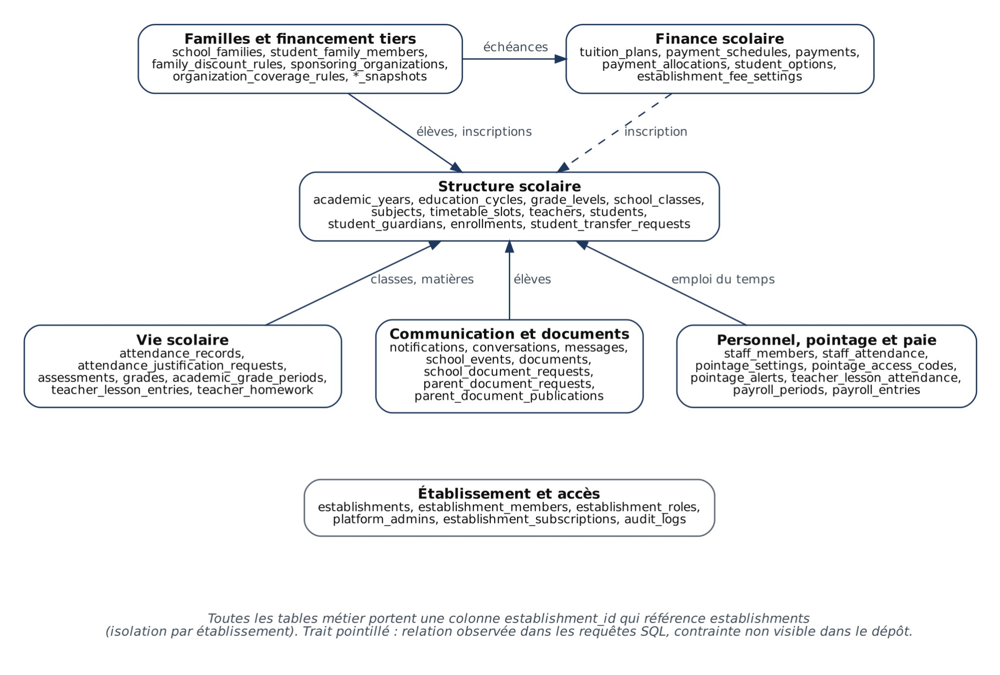
Les inscriptions, les échéanciers et les paiements (figure 2) forment le cœur financier : un paiement est affecté à des échéances ( payment_allocations ), et ces échéances appartiennent à une inscription. Les familles et les organismes payeurs (figure 3) se greffent sur ce cœur au moyen d'instantanés qui conservent, pour chaque inscription, la réduction ou la prise en charge appliquée.
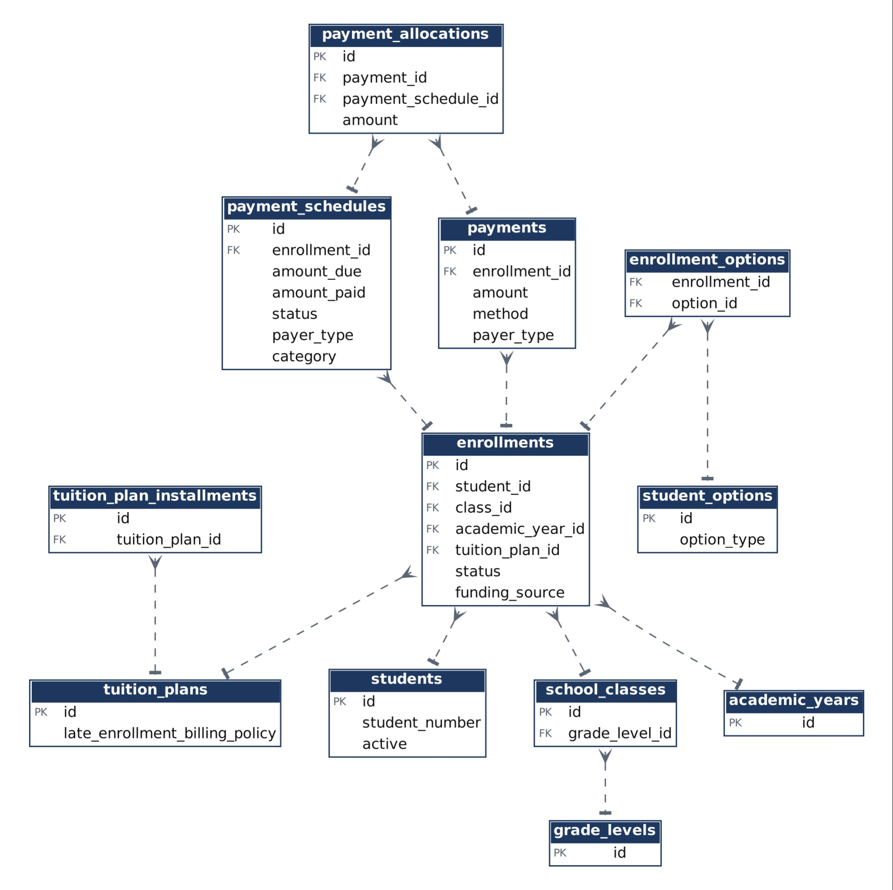
Trait pointillé : relation observée dans les requêtes SQL ; contrainte non déclarée dans le dépôt.
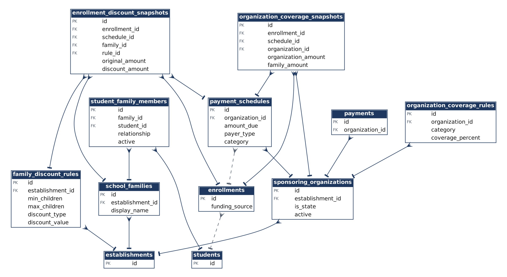
Trait plein : clé étrangère déclarée dans une migration du dépôt ; trait pointillé : relation observée dans les requêtes.
La figure 4 rassemble les données liées à la vie scolaire : présences, justificatifs, notes et documents. J'ai représenté séparément les données relatives aux enseignants et au cahier de textes (figure 5), puis celles du pointage du personnel (figure 6). Ces domaines s'appuient sur des tables créées par les migrations présentes dans le dépôt.
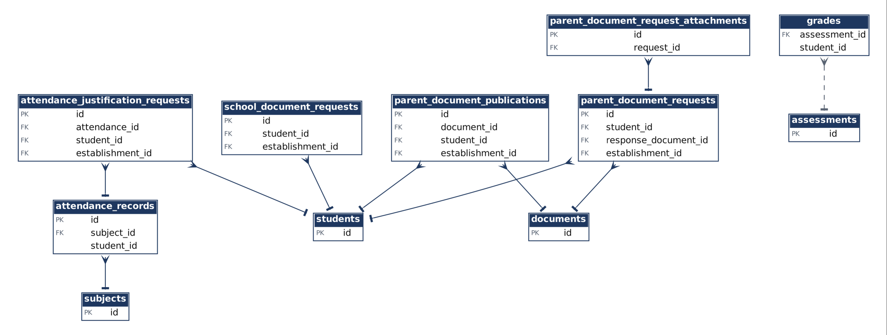
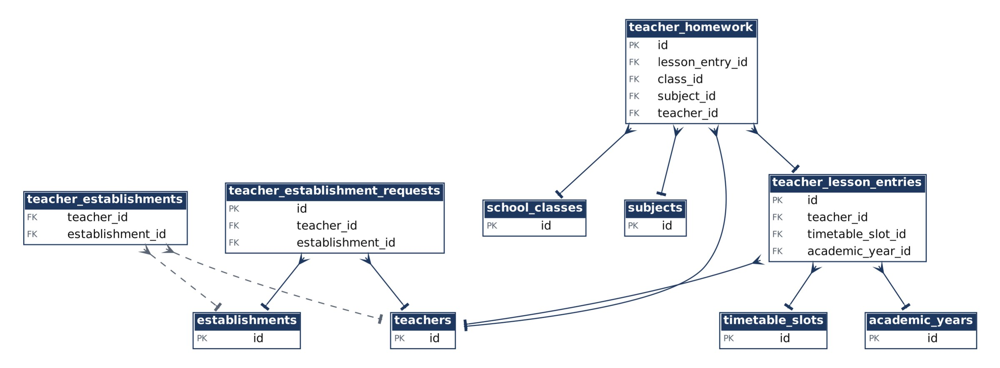
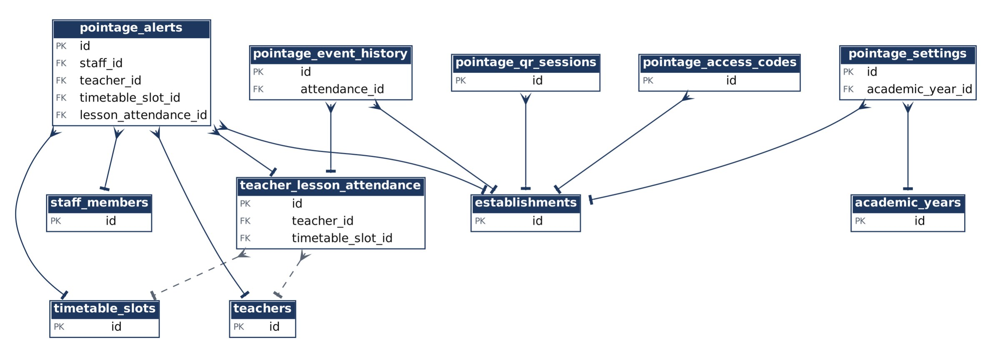
Tableau 5 — Principales entités de données
| Tables | Rôle | Domaine |
|---|---|---|
establishments , establishment_members | Établissements et appartenance des utilisateurs, avec leur rôle | Établissement et accès |
academic_years , grade_levels , school_classes | Années académiques, niveaux, classes | Structure scolaire |
students , student_guardians | Élèves et responsables légaux liés à un compte | Structure scolaire |
enrollments | Inscription d'un élève à une classe pour une année académique | Structure scolaire |
tuition_plans , payment_schedules | Plans de frais et échéances d'une inscription | Finance scolaire |
payments , payment_allocations | Paiements et leur affectation à des échéances | Finance scolaire |
school_families , student_family_members | Familles et rattachement explicite des élèves | Familles et financement tiers |
family_discount_rules , sponsoring_organizations | Règles de réduction et organismes payeurs | Familles et financement tiers |
attendance_records , attendance_justification_requests | Présences et demandes de justification | Vie scolaire |
assessments , grades | Évaluations et notes | Vie scolaire |
pointage_* , teacher_lesson_attendance | Codes, sessions QR, événements, alertes, séances de cours | Personnel, pointage et paie |
notifications , conversations , documents | Communication et documents scolaires | Communication et documents |
2.6. Cas d'utilisation
La figure 7 présente les acteurs et les actions que mon code leur ouvre. Tous les acteurs ne sont pas reliés à tous les cas : par exemple, seul l'enseignant pointe un début ou une fin de cours, et seul le parent dépose un justificatif. La direction est représentée comme une spécialisation de l'administrateur d'établissement, parce que la fonction private.has_permission leur donne les mêmes permissions. Le cas « gérer personnel et paie » est inscrit tel que je l'ai développé ; son niveau de validation est discuté au chapitre 8.
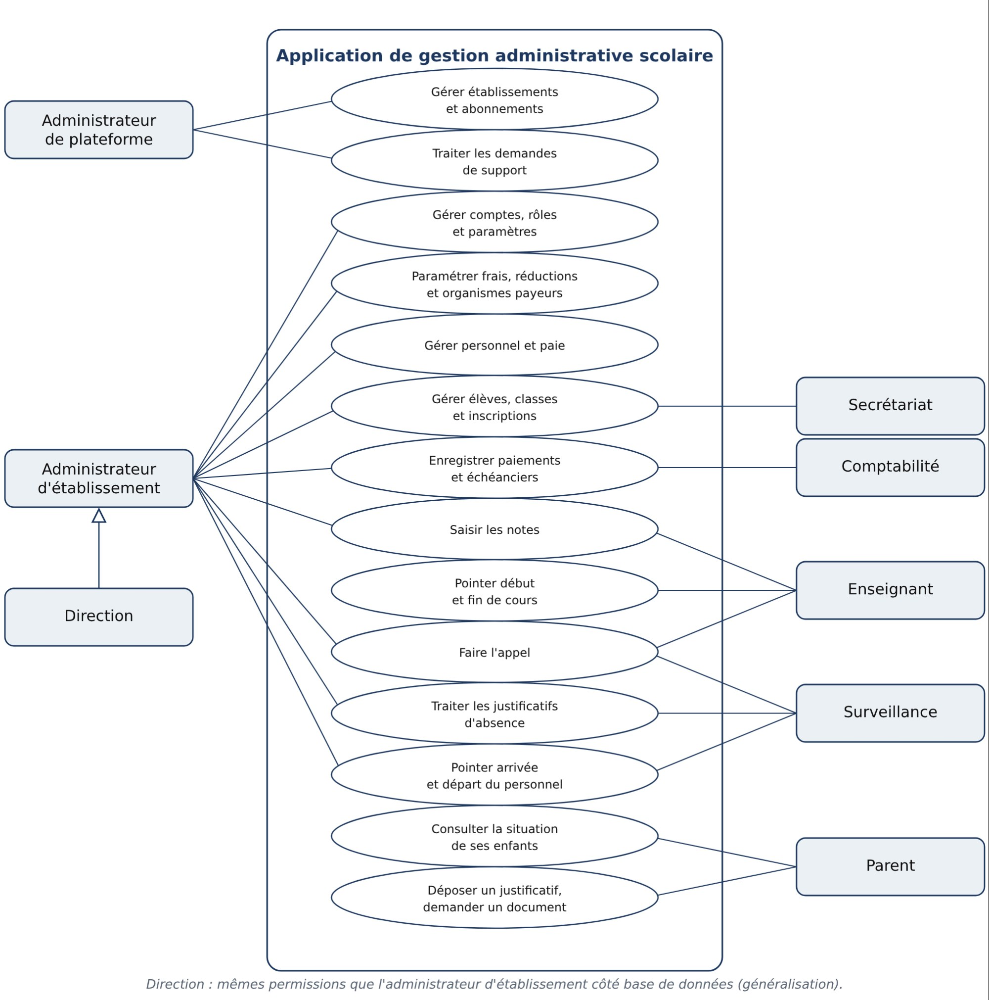
Troisième partie — L'application
Connexion, navigation et espace d'administration
3.1. Accès à l'application
L’application est accessible en ligne à l’adresse syst-me-administratif-scolaire.vercel.app. Elle est déployée sur la plateforme Vercel et propose une interface d’accueil intitulée « NOVA — Système de Gestion Scolaire ». Cette interface présente les trois principaux espaces d’utilisation de l’application : l’espace établissement, l’espace enseignant et l’espace parent. Un bouton permet également d’accéder à la page de connexion.
La connexion repose sur Supabase Auth. L'utilisateur saisit son adresse électronique et son mot de passe ; l'application transmet ces informations au service d'authentification. Une fois la connexion établie, elle récupère les informations associées au compte : son type, les établissements auxquels il est rattaché et son rôle. Cette étape s'appuie sur la fonction get_my_auth_context, qui fournit le contexte nécessaire pour orienter l'utilisateur et déterminer ses autorisations.
Si aucun contexte d'accès n'est associé au compte, l'application met fin à la session et affiche le message « Votre compte n'est pas encore configuré ». J'ai prévu ce contrôle pour éviter qu'un compte qui ne possède pas encore de profil correctement défini puisse accéder aux espaces de travail.
La figure 8 présente l’interface de connexion de l’application, tandis que la figure 9 illustre les différentes étapes du processus d’authentification.
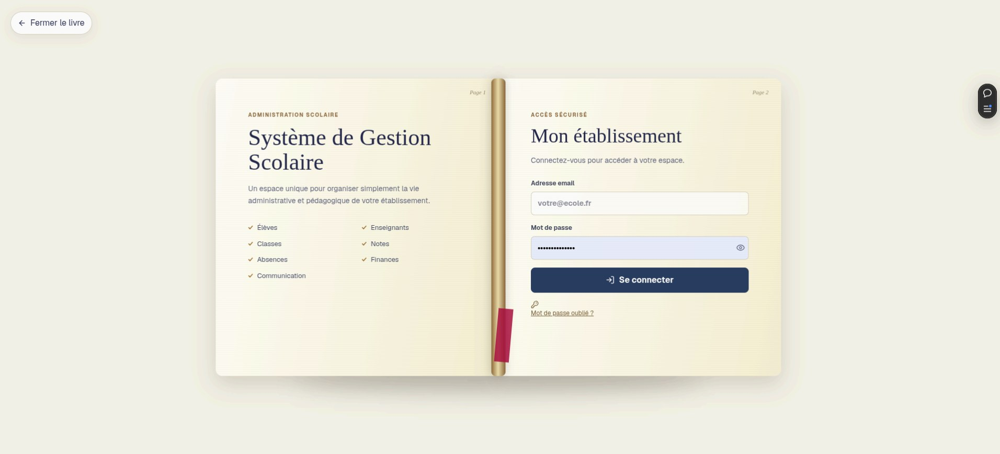
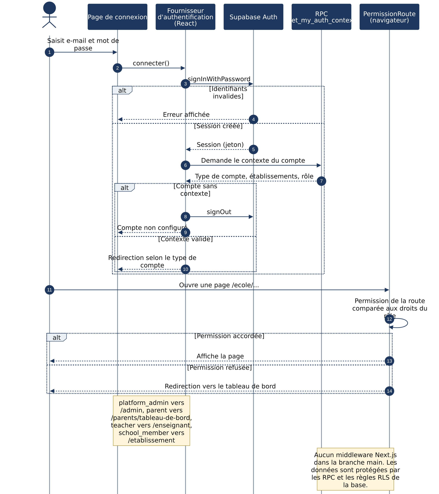
Après l’authentification, l’utilisateur est orienté vers l’espace correspondant à son type de compte. Selon son profil, il peut accéder à l’espace d’administration (/admin), à l’espace établissement (/etablissement), à l’espace enseignant (/enseignant) ou à l’espace parent (/parents/tableau-de-bord).
Dans l'espace établissement, j'ai développé le composant PermissionRoute pour adapter l'accès aux pages selon les permissions du rôle connecté. Le composant vérifie l'autorisation associée à la route et redirige l'utilisateur vers le tableau de bord lorsque cette permission lui manque.
Ce contrôle intervient dans le navigateur. Il facilite la navigation et évite de proposer des pages qui ne correspondent pas au profil de l'utilisateur, mais il ne suffit pas à protéger les données puisqu'il peut être contourné. J'ai donc également prévu des contrôles au niveau de la base de données, avec les fonctions SQL et les politiques RLS de Supabase. Leur fonctionnement est expliqué plus en détail au chapitre 7.
Lorsqu'un utilisateur oublie son mot de passe, il peut lancer une procédure de récupération depuis la page dédiée. L'application lui envoie par courrier électronique un code à usage unique qui lui permet de poursuivre la récupération de son compte.
3.2. Espace d’administration de la plateforme
L'espace d'administration, accessible à l'adresse /admin, regroupe les fonctions nécessaires à la gestion générale de la plateforme. J'y ai prévu la consultation et la gestion des établissements, la création de nouveaux établissements, le suivi des abonnements et l'administration des comptes. Cet espace permet également de traiter les demandes d'ouverture d'établissement et les sollicitations adressées au service technique.
Pour réaliser ces opérations, j'ai relié l'interface à des fonctions SQL dédiées à l'administration de la plateforme, dont plusieurs portent le préfixe platform_admin_. Certaines actions spécifiques passent aussi par des fonctions Edge, notamment create-platform-admin et create-establishment-super-admin.
Le suivi des abonnements est complété par une tâche planifiée sur Vercel. Chaque jour à 7 heures UTC, elle appelle la route interne /api/internal/subscription-monitor, qui vérifie les échéances des abonnements.
3.3. Espace établissement
L'espace établissement, accessible depuis /ecole, est la partie la plus étendue de l'application. J'y ai développé une soixantaine de pages consacrées aux principales activités administratives et pédagogiques d'un établissement scolaire.
On y retrouve le tableau de bord, les dossiers des élèves et les inscriptions, la gestion des classes et des matières, les emplois du temps, les notes et les résultats, le registre d'appel, le personnel et le pointage, les finances, les documents, la communication avec les familles et les paramètres de l'établissement.
Les modules accessibles dépendent du rôle attribué à chaque utilisateur et des permissions qui lui sont associées. Les profils propriétaire, administrateur et direction disposent d'un accès étendu, tandis que les autres utilisateurs accèdent aux seules fonctionnalités autorisées pour leur rôle.
La figure 10 présente le tableau de bord de l’espace établissement.
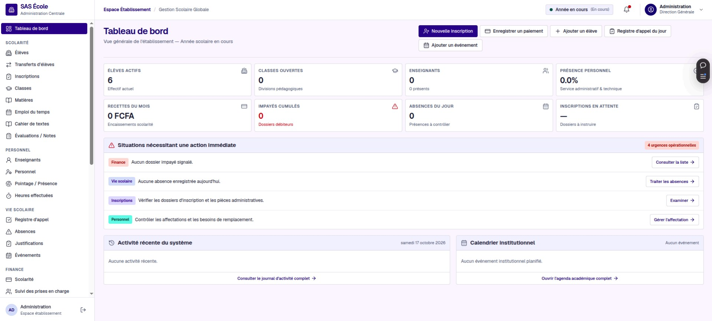
L'espace établissement comprend aussi une rubrique de paramètres scolaires, accessible depuis /ecole/settings. Elle permet de définir les éléments qui structurent l'année scolaire : année académique, niveaux d'enseignement, classes, frais de scolarité, options, prises en charge et utilisateurs.
Ces paramètres servent de référence aux activités scolaires et administratives. Ils permettent à chaque établissement d'adapter l'application à son organisation et à ses règles de fonctionnement.
La figure 11 présente l’interface de gestion de la structure scolaire.
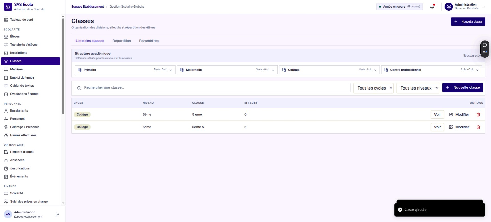
Scolarité : élèves, inscriptions et résultats
4.1. Dossiers d'élèves
La liste des élèves est organisée sous forme de pages et peut être filtrée ou recherchée. Chaque dossier regroupe les informations essentielles : identité de l'élève, responsables légaux, classe et inscriptions. J'ai également prévu les opérations de création, de modification et de désactivation du dossier, avec des vérifications des droits au niveau des fonctions SQL. Un outil d'importation permet enfin d'intégrer les listes d'élèves prises en charge par l'État. La figure 12 présente la liste et la fiche d'un élève à partir de données fictives.
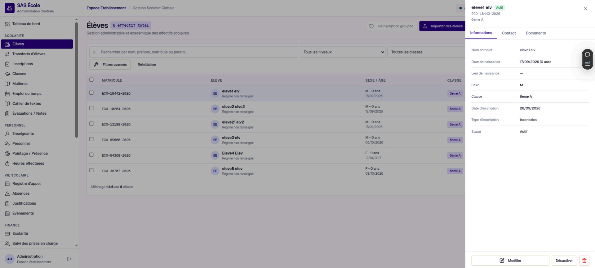
4.2. Inscription, réinscription et transfert
Le parcours d'inscription reprend les principales étapes suivies au secrétariat. Je commence par rechercher si l'élève possède déjà un dossier afin d'éviter les doublons. Je renseigne ensuite l'année académique, la classe, le plan de frais et, si nécessaire, les options choisies. L'enregistrement permet de créer le dossier de l'élève lorsqu'il est nouveau, son inscription et son échéancier. Pour une fratrie ou une prise en charge par un organisme, les réductions et les montants couverts sont ensuite appliqués avant l'enregistrement des paiements dans le module financier (règle RG8). La figure 13 illustre les principales étapes de ce parcours, y compris les cas dans lesquels l'enregistrement est refusé.
J'ai également développé une variante permettant de prendre en compte un élève apparenté, le lien de parenté et l'organisme qui participe au financement (create_student_enrollment_with_family_funding). Cette évolution est récente ; je la présente donc comme développée, mais pas encore comme entièrement validée par des essais.
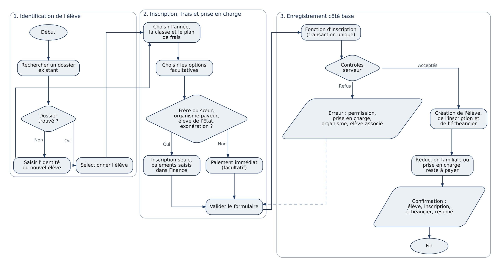
Lorsqu'un élève change d'établissement, son transfert passe par une demande qui doit être approuvée avant d'être finalisée. La réinscription suit une autre logique : elle conserve le dossier de l'élève et crée une nouvelle inscription pour l'année académique suivante. L'application peut aussi proposer la classe suivante à partir de son parcours scolaire. La figure 14 présente la liste des dossiers d'inscription ; les informations relatives aux responsables ont été floutées.
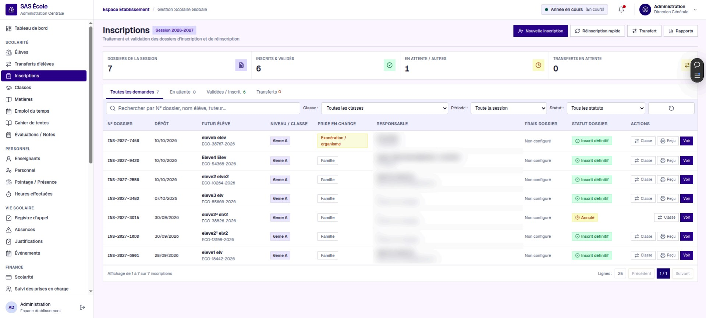
4.3. Classes, matières et emplois du temps
J'ai relié à Supabase la gestion des cycles, des niveaux, des classes, des matières et des créneaux de l'emploi du temps. Les corrections apportées à la répartition des effectifs et au contexte de l'établissement ont permis de stabiliser récemment la page des classes. Je poursuis toutefois la vérification des références locales qui pourraient encore intervenir dans certains parcours.
4.4. Notes, évaluations et bulletins
J'ai développé les fonctions de saisie des notes, de gestion des évaluations, de calcul des résultats et de génération des bulletins PDF. Ces pages s'appuient sur des services dédiés connectés à Supabase. Les premiers essais du module avaient été menés à terme, mais j'ai depuis modifié la récupération des notes et des bulletins : je dois donc reprendre les tests de non-régression avant de considérer cette version comme validée. Je dois également vérifier la source de données de la page /ecole/evaluation. Dans l'espace parent, l'affichage, le classement et le téléchargement des bulletins restent à finaliser.
Finances : frais, paiements, familles et prises en charge
5.1. Frais, échéanciers et paiements
Le paramétrage des frais définit, pour une année académique et un niveau, le montant à payer ainsi que les modalités de règlement. À partir de ce plan, l'application crée les échéances associées à chaque inscription. Lorsqu'un paiement est saisi, une fonction SQL unique vérifie le rôle de l'utilisateur, le montant et l'échéance concernée, puis enregistre le paiement et son affectation au cours d'une même transaction. Le solde et l'historique affichés sont ensuite calculés à partir des données enregistrées. La figure 15 illustre cet enchaînement.
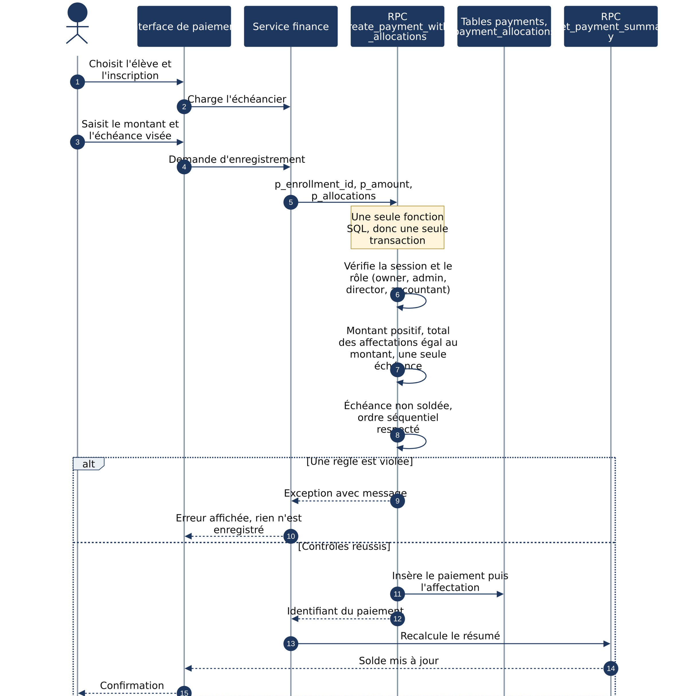
Séquence d'enregistrement d'un paiement ; les scénarios de paiement que j'ai validés sont présentés au chapitre 8.
J'ai notamment vérifié le cas d'un paiement partiel : le versement effectué sur une échéance doit diminuer le montant restant dû pour cette échéance sans modifier les suivantes. Ce comportement fait partie des scénarios G1 à G5 que j'ai exécutés et validés au chapitre 8.
La mise au point de ce module m'a amené à corriger plusieurs situations, notamment l'affichage d'un montant dû pour une inscription exonérée, l'import des élèves pris en charge par l'État et l'ordre d'affichage de l'inscription et des échéances mensuelles. La figure 16 présente le suivi de la scolarité, avec les échéances, les retards et l'accès à l'encaissement, à partir de comptes de test.
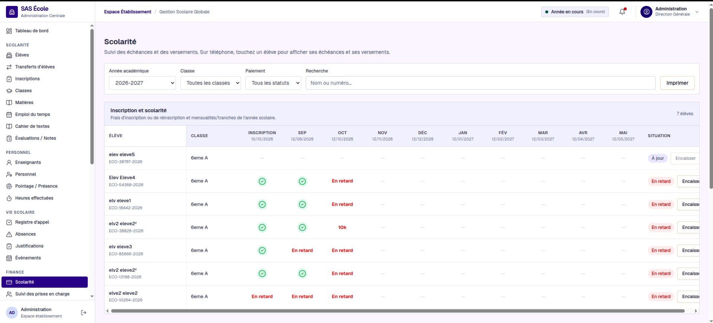
5.2. Familles, réductions et organismes payeurs
J'ai choisi de représenter les familles à partir de liens explicites entre les élèves, plutôt que de déduire automatiquement une parenté à partir de noms identiques. Une famille regroupe ainsi plusieurs élèves au moyen de relations enregistrées dans la base, et la recherche des frères et sœurs s'appuie sur ces liens.
Les réductions familiales sont définies à partir de règles précisant le nombre d'enfants concernés, le type et le montant de la réduction, les frais auxquels elle s'applique, sa période de validité et la possibilité de la cumuler avec d'autres aides. Les organismes payeurs disposent également de règles qui déterminent les catégories de frais qu'ils peuvent couvrir. Pour chaque inscription, j'enregistre les montants effectivement déduits ou pris en charge afin de conserver la trace du calcul appliqué, même si les règles évoluent par la suite.
Dans ce domaine, j'ai séparé le paramétrage des règles, le calcul du reste à payer, l'enregistrement des paiements et la validation de l'inscription ou de la prise en charge. Cette organisation permet de distinguer les différentes étapes du traitement financier. Les prises en charge par l'État disposent de paramètres spécifiques et d'un mécanisme d'importation dédié. Ce module ayant fait l'objet de plusieurs ajustements récents, certains parcours doivent encore être consolidés.
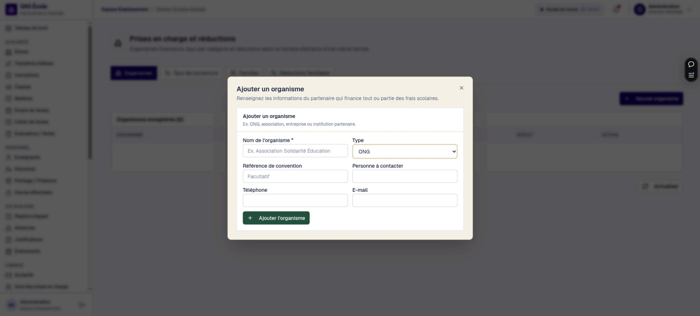
5.3. Comptabilité et suivi du personnel
En complément du suivi des frais de scolarité, j'ai développé des pages consacrées aux dépenses, à la caisse, aux avances, aux rapports et à la paie dans l'espace /ecole/finance. La base contient également des fonctions dédiées au calcul des périodes de paie, aux paiements du personnel et aux avances. Ces opérations sont distinctes de l'encaissement des frais scolaires. Je dois encore vérifier le raccordement de chaque écran et la bonne conservation des opérations : la présence des tables et des fonctions dans la base ne suffit pas à confirmer que tous les parcours sont finalisés.
Enseignants, parents, vie scolaire et pointage
6.1. Espace enseignant
Depuis son espace, l'enseignant retrouve les établissements auxquels il est rattaché, ses classes et ses élèves, son planning, ses documents, le cahier de textes et les fonctions de pointage. Un même enseignant peut intervenir dans plusieurs établissements : il peut demander son rattachement, puis l'établissement concerné accepte ou refuse cette demande. La figure 18 présente cet espace sur téléphone.
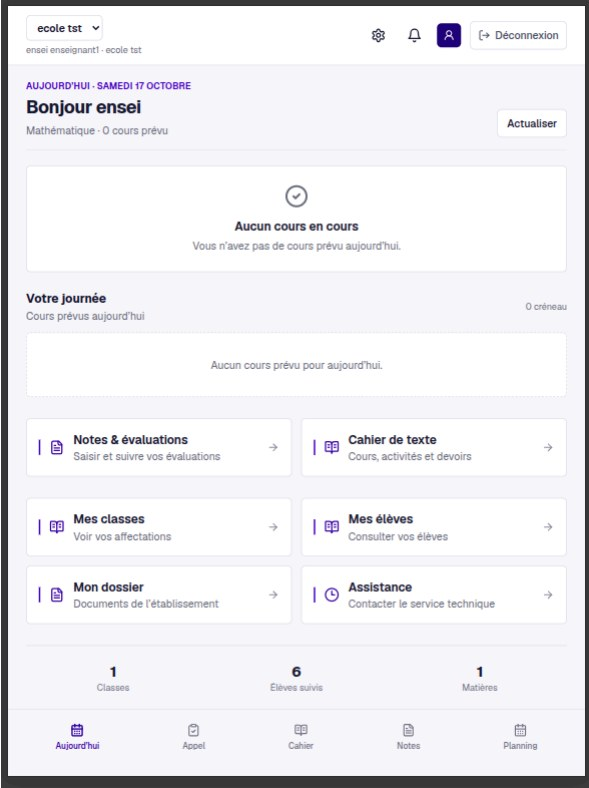
6.2. Registre d'appel et justificatifs
Le registre d'appel permet à l'enseignant d'indiquer, pour chaque séance, les élèves présents, absents ou en retard. J'ai également prévu des contrôles pour repérer les cours passés sans appel, distinguer l'appel réalisé par l'enseignant du rattrapage administratif et empêcher la saisie d'un appel pour un cours qui n'a pas encore eu lieu. Lorsqu'un élève est absent, son parent peut transmettre un justificatif ; un membre du personnel peut ensuite l'accepter ou le refuser. La figure 19 présente ces deux étapes. Ce registre concerne les élèves et doit être distingué du pointage du personnel enseignant.
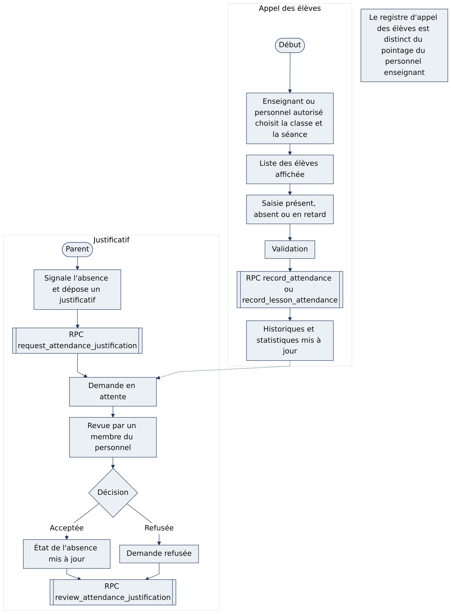
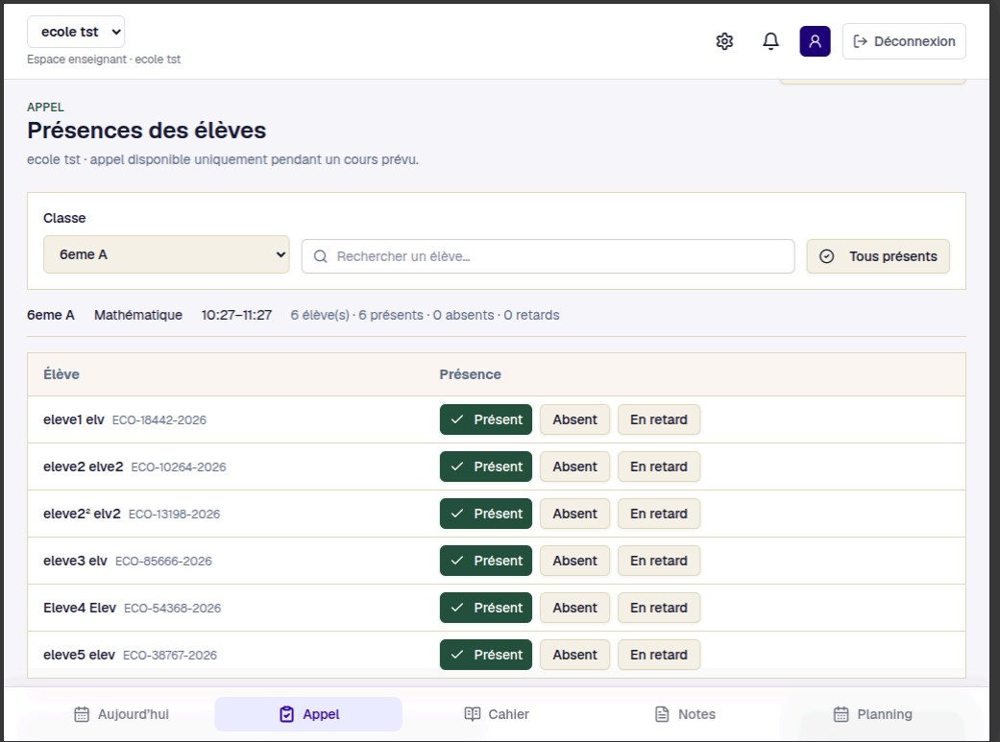
6.3. Pointage du personnel enseignant
Le pointage vise quatre événements : l'arrivée à l'établissement, le départ, le début d'un cours et la fin d'un cours. L'identification se fait par un code personnel, comparé par empreinte, ou par un QR code temporaire affiché sur un poste central et lu depuis le téléphone de l'enseignant. Pour un début de cours, le système retrouve le cours dans l'emploi du temps de l'enseignant à partir de l'heure, avec une tolérance, puis crée une séance. Les heures créditées dépendent de paramètres : durée complète si le retard ne dépasse pas un seuil, durée réduite sinon. Des alertes sont générées à partir de l'emploi du temps (cours non pointé, cours sans clôture), et une personne autorisée peut clôturer un cours avec un motif. La figure 21 montre les trois premiers parcours et la figure 22 la clôture administrative.
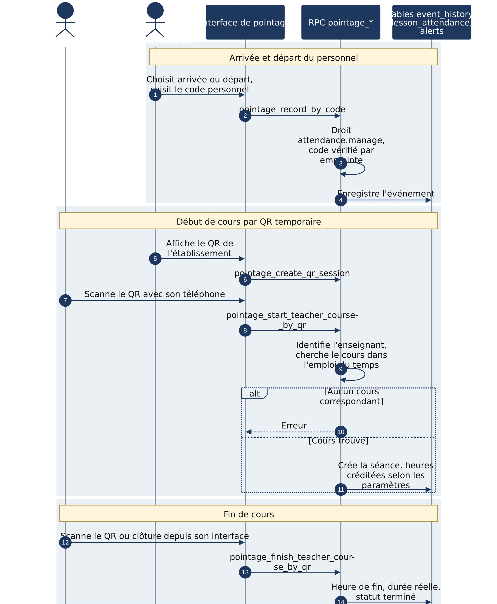
Le parcours de pointage est développé dans l'application. À ce stade, le scénario E5, qui utilise le QR code, est celui dont la vérification est consignée au chapitre 8 ; les autres parcours restent à tester.
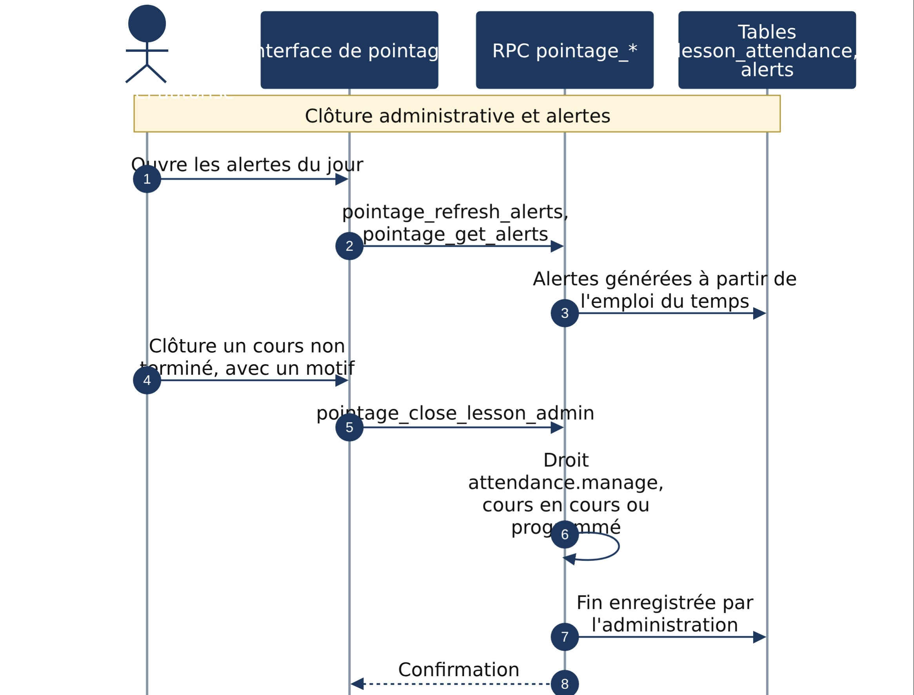
J'ai développé un module de pointage distinct du registre d'appel des élèves. Il permet d'enregistrer l'arrivée et le départ du personnel, ainsi que le début et la fin des cours. L'identification peut se faire à l'aide d'un code personnel ou d'un QR code temporaire. Le module prévoit également la détection du cours à partir de l'emploi du temps, le calcul des heures, les alertes en cas d'oubli de pointage ou de clôture, ainsi qu'un historique et des rapports. Même si ces fonctionnalités sont présentes dans l'application, leur validation reste partielle : seul le scénario E5 avec QR code est actuellement consigné comme réussi au chapitre 8.
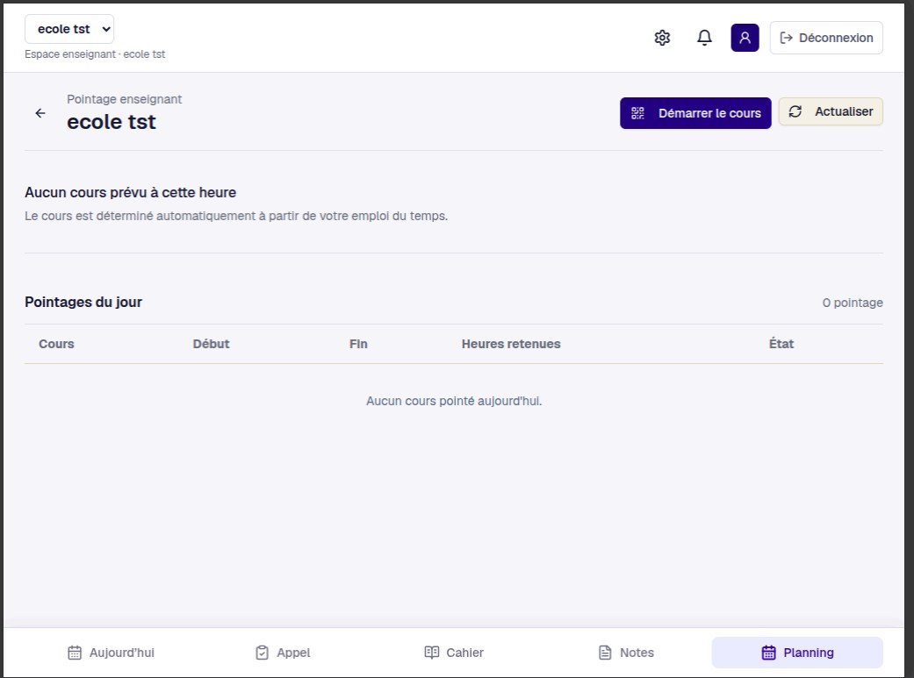
6.4. Espace parent
L'espace parent donne accès aux informations concernant les enfants rattachés au compte. Après connexion, le parent peut consulter le tableau de bord, les notes, les absences, les paiements, le cahier de textes, l'emploi du temps, les événements, les documents et les notifications. Il peut également signaler une absence, transmettre un justificatif et adresser une demande de document à l'établissement. L'association entre le compte parent et l'élève s'effectue à l'aide d'un code ou d'un identifiant.
J'ai relié cet espace à Supabase et prévu des règles d'accès spécifiques pour que chaque parent consulte les informations des enfants qui lui sont associés. Le portail est développé et plusieurs de ses fonctions sont disponibles, mais je n'ai pas encore validé l'ensemble des parcours. Il me reste notamment à compléter les essais sur l'identité de l'enfant, les bulletins et leur téléchargement, les reçus, la communication avec l'établissement, les paramètres du profil et certains contrôles de sécurité. Je considère donc ce module comme réalisé en partie, avec des vérifications complémentaires à effectuer.
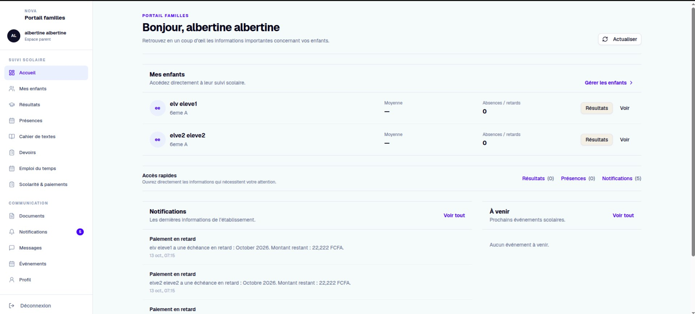
6.5. Documents, notifications et communication
La gestion des documents comporte deux volets. D'une part, les documents publiés par l'établissement et les demandes formulées par les parents sont gérés avec Supabase et ses espaces de stockage sécurisés. D'autre part, la page administrative qui sert à générer les documents conserve encore un ancien service utilisant le stockage local du navigateur. Elle permet de créer différents documents administratifs, puis de les imprimer ou de les télécharger. Je dois encore améliorer la présentation de certains modèles et vérifier leur rendu final à l'impression. Les notifications sont gérées par des fonctions SQL, tandis que la messagerie repose sur des conversations et des messages enregistrés dans la base.
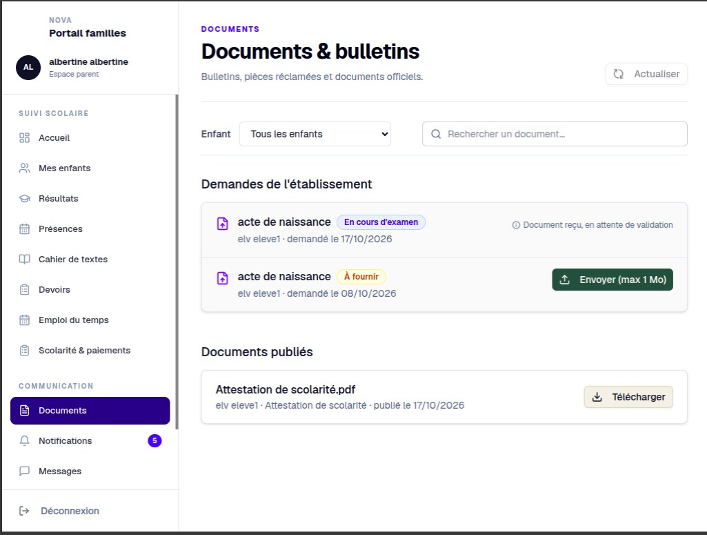
Quatrième partie — Réalisation technique
Architecture, technologies et sécurité
7.1. Organisation du code
J'ai organisé le code en plusieurs couches qui travaillent ensemble : les pages et composants React présentent les interfaces, les hooks gèrent les données et les états, et les services regroupent les opérations métier. Les modules raccordés à Supabase utilisent des services dédiés, des fonctions SQL et des politiques RLS ; certaines opérations d'administration et d'authentification passent aussi par des fonctions Edge. Le projet compte environ 150 pages applicatives, 56 fichiers de services dans services/ et 21 services dans lib/supabase/services/. La migration vers Supabase s'est faite progressivement : certains modules utilisent déjà la base, tandis que d'autres conservent encore un stockage local. La figure 26 présente cette organisation.
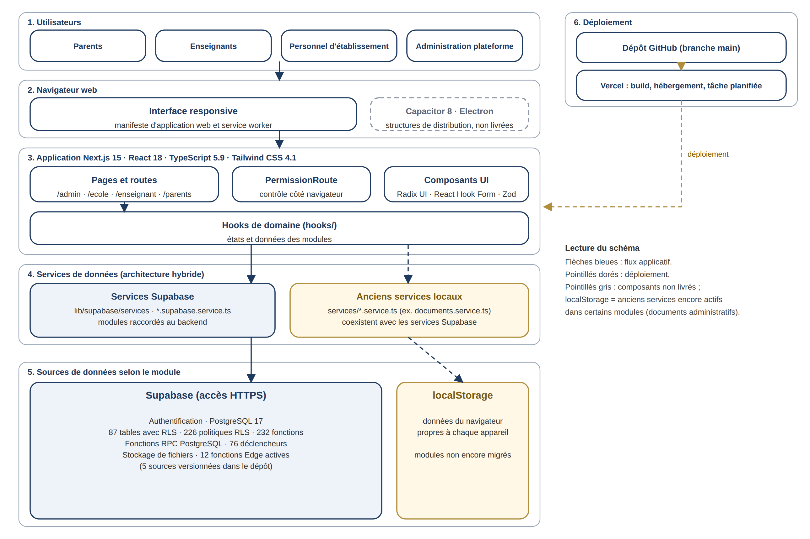
Flèches bleues : flux applicatif ; flèches orange en pointillés : déploiement.
7.2. Technologies
Tableau 6 — Technologies utilisées et rôle dans l’application
| Technologie | Rôle exact |
|---|---|
| Next.js 15 (15.5.24) | Cadre applicatif : pages, routes, rendu et tâche planifiée (route interne appelée par Vercel). |
| React 18 et TypeScript 5.9 | Composants d'interface et typage. Le fichier next.config.js désactive toutefois le blocage du build sur les erreurs TypeScript et ESLint. |
| Tailwind CSS 4.1 | Mise en forme et adaptation aux tailles d'écran. |
| Radix UI, Lucide React | Composants d'interface accessibles et icônes. |
| React Hook Form et Zod | Gestion et validation des formulaires. |
Supabase ( supabase-js ) | Authentification, base PostgreSQL 17, fonctions SQL (RPC), politiques RLS, stockage de fichiers et fonctions Edge, selon les modules. |
localStorage | Stockage dans le navigateur conservé par d'anciens services (par exemple la gestion des documents administratifs) ; données propres à chaque appareil. |
| jsPDF, html2canvas, PapaParse | Génération de documents PDF et import de fichiers CSV côté navigateur. |
| Jest et ts-jest | Tests automatisés (quatre fichiers) et script de test prévu dans package.json ; non exécutés par le workflow GitHub Actions actuel. |
| Vercel et GitHub | Hébergement et déploiement à partir de la branche main ; tâche planifiée quotidienne. |
| Capacitor, Electron | Structures de distribution mobile (Capacitor 8) et de bureau (Electron) dans les dossiers android, ios et electron ; aucune application finale n'est livrée. |
L'application est une application web responsive. Un manifeste d'application web et un service worker de mise en cache de la page d'accueil et de la page hors ligne sont présents ; le comportement hors ligne n'a pas été testé. Ce n'est pas une application mobile native.
7.3. Ce que « Supabase » désigne, module par module
L'utilisation de Supabase n'est pas identique dans toutes les parties de l'application. Certaines pages lisent et enregistrent directement leurs données dans la base, tandis que d'autres s'appuient encore sur des services locaux. La présence d'une table ou d'une fonction SQL ne signifie donc pas automatiquement qu'une page l'utilise, pas plus que le déploiement en ligne ne garantit que tous les parcours ont été testés. J'ai tenu compte de ces différences pour présenter séparément l'état du raccordement, les fonctionnalités disponibles et les résultats des essais.
Pour comprendre comment chaque module enregistre ses données, j'ai parcouru les pages, les hooks et les services des espaces /admin, /ecole, /enseignant et /parents. Cette démarche m'a permis d'identifier les parties déjà reliées à Supabase et celles qui utilisent encore le stockage local. Le registre d'appel et la page financière font partie des parcours raccordés à la base, tandis que la génération administrative des documents conserve un service qui enregistre les données dans le navigateur. L'application suit donc une architecture hybride, appelée à évoluer au fur et à mesure de la migration des modules.
Tableau 7 — Organisation des sources de données selon les modules
| Module | Source de données | Éléments relevés |
|---|---|---|
| Authentification, contexte de compte, administration de plateforme | Supabase (Auth, RPC) | Service authentification.supabase.service.ts ; pages /admin/* pour la plupart |
| Élèves, inscriptions, transferts, frais, paiements, familles, organismes | Supabase (RPC, tables) | Services lib/supabase/services ; hooks useStudents, useEnrollment, usePayments ; page financière active |
| Structure académique, matières, emploi du temps | Supabase (tables) | Services *.supabase.service.ts, hook useAcademicStructure |
| Registre d'appel, justificatifs, pointage, cahier de textes | Supabase (RPC) | Fonctions listStudentsPaginated, listAttendanceForLesson, recordLessonAttendance ; table attendance_records ; pointage.service.ts |
| Notes, évaluations, bulletins | Supabase (services) ; PDF généré dans le navigateur | Services notes, evaluations, periodes-notes ; jsPDF |
| Espaces enseignant et parent | Supabase (RPC, tables, stockage) | Hook use-parent-portal ; services enseignant-portal, teacher-account |
| Documents publiés aux parents | Supabase (tables et stockage) | Espaces school-documents et parent-documents |
| Documents administratifs (génération, impression) | localStorage | Page administrative utilisant documents.service.ts |
| Anciens services locaux | localStorage (coexistent) | registre-appel.service.ts, paiements.service.ts, eleves.service.ts : les parcours actifs correspondants utilisent les services Supabase |
| Classes (archivage, paramètres), fiche enseignant, événements, heures vacataires, paramètres de plateforme | À confirmer module par module | Je dois encore vérifier les appels effectifs des pages et services avant de qualifier la persistance de ces modules |
7.4. Fonctionnement et enchaînement des espaces
La figure 27 présente l'organisation fonctionnelle de l'application : les quatre espaces utilisateurs, les services partagés (authentification, permissions, notifications, documents et support) et les sources de données utilisées. Il s'agit d'une seule application déployée sur Vercel, qui communique avec Supabase pour les modules raccordés à la base.
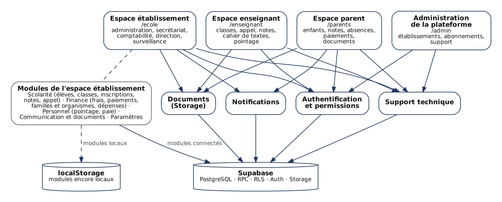
7.5. Sécurité
J'ai organisé la protection de l'application autour de plusieurs niveaux complémentaires. Dans le navigateur, le composant PermissionRoute et l'affichage conditionnel de certaines actions adaptent l'interface au rôle de l'utilisateur. Ces contrôles facilitent l'utilisation, mais ne suffisent pas à protéger les données puisqu'ils peuvent être contournés. Les autorisations doivent donc également être appliquées au niveau de la base, notamment avec les politiques RLS et les fonctions SQL. Au 2 novembre 2026, les 87 tables du schéma public avaient la RLS activée et la base comptait 226 politiques RLS, 232 fonctions publiques, 76 déclencheurs et 12 fonctions Edge actives. J'ai utilisé Supabase Auth ainsi que des mécanismes de gestion des établissements, des membres, des rôles et des permissions. Certaines opérations, comme les paiements, le pointage et les justificatifs, sont également contrôlées par des fonctions PostgreSQL.
Ces mécanismes forment la base de la protection des données dans l'application. Pendant leur mise au point, j'ai néanmoins relevé plusieurs points qui demandent encore des vérifications ou des améliorations. Je les ai regroupés dans le tableau 8.
Les politiques RLS et les fonctions SQL définissent les accès aux données en fonction de l'utilisateur et de son établissement. Il reste toutefois à harmoniser certaines permissions et à poursuivre les vérifications portant sur les fonctions privilégiées. Les éléments du tableau 8 sont des points de vigilance relevés pendant mon travail sur la base ; ils nécessitent des contrôles complémentaires et ne correspondent pas tous à des failles confirmées.
Tableau 8 — État des principaux contrôles de sécurité (2 novembre 2026)
| Point relevé | Constat | Suite à donner |
|---|---|---|
Fonctions SECURITY DEFINER | 185 fonctions SECURITY DEFINER dans le schéma public ; après les corrections du 2 novembre, aucune n’est exécutable par anon et 172 restent exécutables par authenticated. | Les droits d'exécution ont été resserrés pour les fonctions concernées. La revue des fonctions restantes doit se poursuivre ; une fonction SECURITY DEFINER n'est pas automatiquement vulnérable. |
| Cohérence des permissions | Certaines politiques RLS utilisent settings.read, settings.manage, payments.read et finance.view. La fonction private.has_permission ne prévoit pas de correspondance par défaut pour elles et je n'ai trouvé aucune attribution correspondante dans establishment_role_permissions. | Harmoniser les nomenclatures. Certaines opérations sur les prises en charge et les organismes peuvent être refusées aux membres ordinaires : point à corriger ou à vérifier, non une faille confirmée. |
| Tables sans politique RLS | Quatre tables ont la RLS activée sans politique : platform_admins, student_transfer_requests, support_messages et support_requests. | Leur accès direct est bloqué pour les rôles ordinaires. Vérifier que les accès nécessaires passent bien par les fonctions prévues. |
| Mots de passe compromis | Supabase signale que la protection contre les mots de passe compromis est désactivée. | Activer cette protection. |
| Politiques permissives multiples | 137 situations signalées. | Examiner leur combinaison et leur impact, sans conclure qu'elles exposent des données. |
Le contrôle réalisé dans l'interface ne remplace donc pas celui de la base de données. Je dois poursuivre l'harmonisation des règles RLS et des fonctions SQL, puis vérifier leur comportement dans des situations concrètes, notamment lorsqu'il s'agit de séparer les données de deux établissements ou celles de différents comptes parents.
Lors de la vérification du code, je n'ai pas trouvé de clé de service ni de jeton privé utilisé directement dans le navigateur. La clé de service est lue côté serveur à partir de la configuration d'environnement. Les valeurs de connexion visibles dans le code client sont des paramètres publics prévus pour être utilisés dans le navigateur ; elles ne doivent pas être confondues avec une clé secrète.
7.6. Historique des migrations et fonctions Edge
En comparant les fichiers SQL du dépôt avec l'historique des migrations de la base active, j'ai constaté qu'ils ne sont pas encore entièrement synchronisés. Le dépôt contient 91 fichiers correspondant à 87 numéros de version distincts, alors que l'historique de la base comporte 228 versions. Seuls 21 numéros correspondent exactement ; 207 versions enregistrées dans la base n'ont pas de fichier portant le même numéro dans le dépôt, et 66 versions présentes dans le dépôt ne figurent pas dans l'historique consulté. Quatre préfixes sont également utilisés plusieurs fois. Certaines migrations ont pu être renumérotées ou reprises sous une autre forme, mais je n'ai pas encore vérifié toutes ces équivalences. Le dépôt ne permet donc pas, à lui seul, de reconstruire avec certitude la base déployée. Le 2 novembre, j'ai aussi appliqué directement à la base quatre corrections : restriction des droits d'exécution de huit fonctions pour le rôle anonyme, suppression de neuf index dupliqués, optimisation de certaines politiques RLS et retrait des droits d'exécution directs sur quatre fonctions déclenchées automatiquement. Il me reste à reporter ces changements dans les fichiers de migration du dépôt et à effectuer des tests de non-régression.
J'ai également comparé les fonctions Edge actives dans Supabase avec les sources disponibles dans le dépôt. La base en compte 12 actives, mais je n'ai retrouvé les sources que de cinq fonctions : claim-student, create-establishment-super-admin, create-platform-admin, manage-school-user-account et provision-parent-account. Les sept autres fonctions actives ne disposent pas encore de sources correspondantes dans le dépôt :
invite-establishment-memberetinvite-school-user;approve-establishment-requestetcreate-establishment-super-admin-v2;unclaim-student,manage-teacher-accountetget-parent-children.
Pour faciliter la maintenance et pouvoir reconstruire l'environnement de production, je dois donc compléter le dépôt avec les migrations et les sources Edge qui manquent. La synchronisation entre le code versionné et la base active reste un travail à terminer.
7.7. Pistes d'optimisation de la base
Les indicateurs fournis par l'analyse de performance de Supabase m'ont permis de repérer plusieurs pistes d'amélioration, regroupées dans le tableau 9. Je les présente comme des points à examiner, et non comme la preuve que l'application est lente ou que tous les index signalés doivent être supprimés. Avant toute modification, il faut vérifier leur utilité sur une période suffisamment représentative.
Tableau 9 — Indicateurs de performance signalés par l'analyse Supabase
| Indicateur | Nombre | Lecture |
|---|---|---|
| Politiques permissives multiples | 137 | À examiner (combinaison et impact) |
| Index dupliqués | 9 supprimés | Plus de signalement après correction |
| Clés étrangères sans index couvrant | 53 | Piste d'optimisation |
| Politiques avec problème d'initialisation RLS | 0 après correction | Expressions RLS optimisées |
| Index signalés comme inutilisés | 72 | À examiner sur une période représentative avant toute suppression |
Tests et validation
8.1. Démarche de test
J'ai organisé les essais au fur et à mesure de la réalisation des modules. Pour chaque parcours, j'ai utilisé des comptes et des données de test afin de contrôler le comportement de l'interface, l'enregistrement des informations et le respect des droits associés aux rôles. J'ai également vérifié la navigation entre les espaces, l'affichage sur téléphone et la conservation des données après les opérations effectuées.
Pour lire les résultats, j'ai retenu quatre états. « Validé » signifie que j'ai exécuté le scénario et obtenu le résultat attendu. « Non testé » indique que je n'ai pas encore réalisé l'essai. « Non finalisé » concerne un parcours qui n'était pas suffisamment achevé pour être testé complètement. Enfin, « À compléter » désigne une fonctionnalité développée qui nécessite encore des vérifications ou des améliorations. Cette distinction évite de confondre la présence d'une fonction dans le code avec sa validation réelle.
Les essais consignés dans ce chapitre sont ceux que j'ai effectivement réalisés et dont le résultat m'a été communiqué pendant le suivi du projet. Ils ne constituent pas une certification exhaustive de l'application ni un remplacement des tests automatisés.
8.2. Résultats des tests fonctionnels manuels
Les essais manuels sur l'authentification, les rôles, la navigation, les tableaux de bord, l'affichage mobile, les inscriptions, les paiements et le registre d'appel ont donné les résultats présentés dans le tableau 10, qui indique aussi les modules pour lesquels je n'ai pas de résultat complet.
Tableau 10 — Résultats des tests fonctionnels
| Domaine | Essai réalisé | Résultat observé | État |
|---|---|---|---|
| Connexion et accès | Connexion aux espaces et contrôle des rôles ; accès aux tableaux de bord et navigation entre les espaces. | Les connexions et les accès testés ont fonctionné. Les tableaux de bord et la navigation se sont affichés conformément aux parcours essayés. | VALIDÉ |
| Affichage mobile | Ouverture et parcours des écrans sur téléphone. | L'affichage mobile testé est utilisable et les écrans parcourus se sont affichés correctement. | VALIDÉ |
| Élèves et inscriptions | Création et gestion de dossiers d'élèves, inscriptions et contrôle des doublons. | Les opérations testées ont abouti ; le contrôle des doublons a fonctionné sur les cas essayés. | VALIDÉ |
| Classes et enseignants | Consultation et gestion des classes et des informations liées aux enseignants. | Les opérations effectuées pendant les essais ont donné le résultat attendu. | VALIDÉ |
| Registre d'appel | Scénarios E1, E3 et E4 du registre d'appel des élèves. | Les scénarios exécutés ont été concluants. Les enregistrements du registre d'appel ont été validés. | VALIDÉ |
| Parcours QR | Scénario E5 utilisant le QR code. | Le scénario QR effectivement exécuté a été validé. Je ne déclare pas validés les autres scénarios QR, faute de vérification correspondante. | VALIDÉ |
| Scénario E2 | Scénario E2 de la grille de tests. | Je n'ai pas exécuté ce scénario. Il ne doit donc pas être présenté comme un échec ni comme une réussite. | NON TESTÉ |
| Paiements | Scénarios G1 à G5 portant sur les opérations de paiement. | Les cinq scénarios exécutés ont été validés, dans le périmètre de ces essais. La correspondance avec la version actuelle du dépôt reste à confirmer. | VALIDÉ |
| Persistance des données | Scénario H1 : conservation des données après les opérations. | Les données sont restées disponibles après les opérations testées. | VALIDÉ |
| Contrôle de cohérence | Scénario H3 : cohérence des informations enregistrées. | Le résultat obtenu lors de l'essai a été conforme au comportement attendu. | VALIDÉ |
| Protection des données | Scénario H4 : protection des données dans le cas testé. | Le contrôle effectué a donné le résultat attendu. | VALIDÉ |
| Scénario H2 | Scénario H2 de la grille de tests. | Ce scénario n'a pas été exécuté ; aucun résultat positif ou négatif ne peut lui être attribué. | NON TESTÉ |
| Prises en charge et réductions | Scénarios F1 à F4. | Ces parcours n'étaient pas finalisés au moment des essais. Je ne les présente donc pas comme validés. | NON FINALISÉ |
| Scénarios I1 et I2 | Parcours complémentaires I1 et I2. | Ces parcours n'étaient pas finalisés au moment des essais. | NON FINALISÉ |
| Notes et résultats | Saisie des notes, calculs, résultats et bulletins PDF. | Fonctionnalités développées ; mes essais fonctionnels antérieurs avaient été conduits à leur terme. Mes modifications récentes de la récupération des notes et des bulletins imposent de reprendre les tests de non-régression. | À COMPLÉTER |
| Documents et impression | Génération et préparation des documents administratifs. | La fonctionnalité est développée. Les modèles doivent encore être améliorés visuellement et le rendu final à l'impression n'a pas été contrôlé. | À COMPLÉTER |
| Pointage du personnel | Pointage par code, sessions QR, début et fin de cours, alertes, clôture. | Module développé. Hors le scénario E5, je n'ai pas de résultat de test consigné : le registre d'appel des élèves ne prouve pas que les parcours de pointage sont validés. | À COMPLÉTER |
| Portail des parents | Consultation des enfants, résultats, paiements, présences ; justificatifs et documents. | Parcours disponibles, mais plusieurs fonctionnalités et tests de sécurité restent à compléter (voir la section 6.4). | À COMPLÉTER |
| Erreurs réseau | Comportement de l'application en cas d'erreur réseau. | Je n'ai pas réalisé d'essai réel ; je ne déclare pas ce scénario validé. | NON TESTÉ |
8.3. Tests automatisés, compilation et disponibilité
Les tests manuels décrits plus haut ne doivent pas être confondus avec les tests automatisés. Le dépôt contient quatre fichiers de tests Jest, et le fichier package.json prévoit un script de test :
tests/comptabilite-facade.test.ts;tests/enseignants.service.test.ts;tests/messages-service.test.ts;tests/notifications-service.test.ts.
Le workflow GitHub Actions vérifie actuellement l'installation des dépendances et la compilation de l'application Next.js. Il ne lance pas automatiquement les tests Jest, ESLint ni une vérification TypeScript distincte. Les contrôles automatisés restent donc à compléter pour obtenir une vérification plus régulière du code. Cela ne remet pas en cause les essais manuels que j'ai réellement effectués, mais ceux-ci ne remplacent pas une suite automatisée reproductible.
Je distingue aussi trois constats qui ne prouvent pas la même chose. Une compilation réussie prouve que le processus de build s'est terminé. Une page renvoyant un code HTTP 200 prouve que le serveur a répondu. Aucun des deux ne garantit à lui seul que les données, les calculs et les autorisations fonctionnent correctement : seul un test fonctionnel exécuté le démontre.
8.4. Interprétation des résultats
Les résultats montrent que les principaux parcours de gestion des élèves, des inscriptions, des paiements et du registre d'appel ont été testés avec succès dans les situations indiquées. Les cinq scénarios G1 à G5 sont validés. Pour le registre d'appel, les scénarios E1, E3 et E4 ont été validés, ainsi que le scénario E5 utilisant le QR code.
Certains parcours restent en attente de vérification. Les scénarios E2 et H2 n'ont pas été exécutés ; les scénarios F1 à F4 et I1 à I2 n'étaient pas encore finalisés ; le comportement en cas d'erreur réseau n'a pas non plus été essayé. Je les laisse donc dans leur état réel : ils ne sont ni des échecs constatés ni des réussites validées.
Les modules de notes et résultats, de documents et impression, de pointage et de portail des parents sont développés, mais leur vérification est incomplète. La validation du registre d'appel des élèves ne permet pas de conclure que tous les parcours de pointage du personnel enseignant sont validés. Je n'ai pas non plus de preuve que le dernier commit visible de main (923563d) est exactement la version sur laquelle tous mes essais ont été exécutés.
8.5. Points techniques et limites constatées
Pendant le développement, j'ai corrigé plusieurs comportements signalés dans les parcours des élèves, des inscriptions et de la structure scolaire. Les essais ultérieurs sur les élèves, les inscriptions, les classes et les enseignants ont été concluants dans le périmètre effectivement parcouru.
Il reste plusieurs parcours à terminer ou à tester : les prises en charge et réductions (F1 à F4), les scénarios I1 et I2, les scénarios E2 et H2, les erreurs réseau, les autres parcours QR et de pointage, les tests de non-régression des notes et des bulletins, certaines fonctions du portail parent ainsi que le rendu des documents imprimés.
Ces limites montrent les aspects que je dois encore améliorer pour renforcer la fiabilité de l'application ; elles ne constituent pas un échec du projet.
Cinquième partie — Bilan
Résultats, limites et perspectives
9.1. Résultats obtenus
Au terme de ce travail, j'ai réalisé une application web de gestion administrative scolaire organisée autour de plusieurs espaces correspondant aux profils d'utilisateurs. J'ai structuré les données scolaires dans une base PostgreSQL, développé les parcours de gestion des élèves et des inscriptions, le suivi des présences, la gestion des notes et résultats, le suivi des paiements, la communication avec les parents, la gestion du personnel et le pointage, et j'ai intégré progressivement un backend Supabase avec des mécanismes d'authentification et de contrôle d'accès.
Les essais que j'ai effectués ont confirmé le fonctionnement des parcours de connexion, de gestion des rôles, de navigation, des tableaux de bord, de gestion des élèves et des inscriptions, des classes et des enseignants. J'ai également validé les scénarios de registre d'appel E1, E3 et E4, le scénario E5 avec QR, les scénarios de paiement G1 à G5 ainsi que les contrôles H1, H3 et H4 relatifs à la persistance, à la cohérence et à la protection des données.
Ces résultats sont ceux des scénarios effectivement exécutés. Ils ne signifient pas que toutes les fonctions de l'application ont été testées. J'ai choisi de présenter séparément ce qui est développé, ce qui est validé et ce qui reste à terminer, afin de donner une image fidèle de l'état du projet.
9.2. Difficultés rencontrées
Les principales difficultés ont concerné la cohérence des données entre les différents modules, la gestion des droits selon les profils et la prise en compte de situations financières particulières. Le développement d'une application scolaire demande en effet de maintenir les mêmes informations à jour dans les dossiers des élèves, les inscriptions, les paiements et les espaces de consultation.
La transition vers Supabase a également demandé une évolution progressive de l'application. Certains anciens services utilisaient encore le stockage local alors que plusieurs modules étaient déjà reliés à la base. J'ai donc préféré faire évoluer les services au fur et à mesure, plutôt que de modifier toute l'application en une seule fois. J'ai suivi la même démarche pour les essais : j'ai validé les parcours prêts à être testés et laissé en attente ceux qui nécessitaient encore du développement ou des vérifications.
9.3. Limites actuelles et perspectives
J'ai identifié plusieurs limites que je dois encore traiter :
- l'historique des migrations n'est pas entièrement synchronisé avec le dépôt ;
- sept fonctions Edge actives n'ont pas de source correspondante dans le dépôt ;
- certaines permissions sont à harmoniser entre l'interface et la base ;
- certaines fonctions
SECURITY DEFINERdemandent une vérification approfondie ; - plusieurs fonctionnalités du portail des parents sont à compléter ;
- la gestion des documents administratifs est encore partiellement locale ;
- des tests complémentaires restent à faire sur les bulletins, le pointage, le QR et les erreurs réseau ;
- les parcours F1 à F4, I1 et I2 doivent être finalisés ;
- certains modèles d'impression sont à améliorer et le rendu papier à contrôler ;
- les optimisations signalées pour la base sont à examiner.
Les prochaines étapes consistent à terminer les parcours financiers particuliers, harmoniser les permissions, versionner les migrations et les fonctions Edge manquantes, reprendre les tests de non-régression des notes, puis exécuter les suites automatisées dans un environnement reproductible. Je poursuivrai aussi les contrôles de sécurité sur les accès entre établissements et entre comptes parents, en conservant les résultats de chaque essai. Ces limites ne sont pas un échec du projet : elles montrent les points que je dois améliorer pour renforcer sa fiabilité. Le tableau 11 dresse le bilan des fonctionnalités.
Tableau 11 — Bilan des fonctionnalités
| Fonctionnalité | Bilan retenu | Précision |
|---|---|---|
| Authentification, rôles et navigation | Développées ; validées sur les parcours essayés | Les connexions, les accès par rôle, les tableaux de bord et la navigation testés ont fonctionné. |
| Affichage mobile | Développé ; validé sur les écrans essayés | Le parcours mobile testé a donné un affichage utilisable. |
| Élèves, inscriptions et doublons | Développés ; validés sur les opérations essayées | La création et la gestion des dossiers ainsi que le contrôle des doublons ont été testés. |
| Classes et enseignants | Développés ; validés sur les opérations essayées | Les manipulations effectuées pendant les essais ont été concluantes. |
| Registre d'appel des élèves | Développé et validé | Scénarios E1, E3 et E4 réussis ; scénario E5 avec QR validé ; scénario E2 non testé. |
| Paiements et finances | Développés ; scénarios G1 à G5 validés | La paie, la comptabilité et les prises en charge ne sont pas couvertes par ces essais. |
| Persistance, cohérence et protection | Validées sur les scénarios H1, H3 et H4 | Le scénario H2 n'a pas été testé. |
| Prises en charge et réductions | Développées ; parcours non finalisés | Les scénarios F1 à F4 n'étaient pas prêts pour une validation complète. |
| Scénarios I1 et I2 | Non finalisés | Ces parcours restent hors du périmètre des fonctions validées. |
| Notes et résultats | Développés ; vérification complémentaire à terminer | Les modifications récentes des bulletins imposent de reprendre les tests de non-régression. |
| Documents administratifs et impression | Développés ; partiellement locaux ; rendu non contrôlé | La page administrative utilise encore localStorage ; modèles à améliorer et impression à vérifier. |
| Portail des parents | Développé ; plusieurs parcours à compléter | Identité de l'enfant, bulletins, reçus, communication complète, profil et tests de sécurité restent à traiter. |
| Pointage du personnel enseignant | Développé ; vérifications complémentaires nécessaires | Seul le scénario E5 est consigné comme validé ; le registre d'appel des élèves ne prouve pas la validité du pointage. |
| Tests automatisés | Quatre fichiers Jest disponibles | Le workflow GitHub Actions compile l'application mais n'exécute pas ces suites. |
| Sécurité et contrôle d'accès | Mécanismes en place ; harmonisation à poursuivre | Permissions à harmoniser, fonctions SECURITY DEFINER à revoir, protection des mots de passe à activer. |
| Traçabilité du backend | Limitée | Historique des migrations non synchronisé avec le dépôt ; sept fonctions Edge sans source dans le dépôt. |
| Application mobile native et version de bureau | Non livrées | Le projet présenté est une application web responsive ; les structures Capacitor et Electron ne constituent pas des applications terminées. |
Conclusion générale
Ce projet répondait à des besoins que j'ai observés dans mon environnement professionnel : comment centraliser la gestion administrative d'un établissement scolaire tout en limitant l'accès de chacun à ce que son rôle justifie. J'ai conçu et développé une application web qui structure les données scolaires, gère les élèves et les inscriptions, suit les présences, les notes et résultats et les paiements, facilite la communication avec les parents et gère le personnel. J'ai intégré progressivement un backend Supabase et mis en place des mécanismes d'authentification et de contrôle d'accès.
Les essais que j'ai effectués ont permis de valider l'authentification et les rôles sur les parcours testés, la navigation, les tableaux de bord, l'affichage mobile, la gestion des élèves et des inscriptions, les classes et les enseignants, le registre d'appel, le scénario QR E5, les cinq scénarios de paiement G1 à G5, ainsi que les contrôles H1, H3 et H4. Ces résultats montrent que plusieurs fonctions essentielles sont opérationnelles dans les situations essayées.
Le travail n'est cependant pas entièrement achevé, et je ne confonds pas une fonction présente dans le code, une fonction disponible en production et une fonction testée. Les scénarios F1 à F4 et I1 à I2 n'étaient pas finalisés ; les scénarios E2 et H2 n'ont pas été exécutés ; les notes et les bulletins, le pointage, le portail des parents et le rendu des documents imprimés demandent des vérifications complémentaires. Sur le plan technique, j'ai identifié des permissions à harmoniser, des fonctions privilégiées à revoir, un historique de migrations et des fonctions Edge qui ne sont pas entièrement versionnés dans le dépôt, ainsi que des services encore locaux.
Cette réalisation m'a permis de mettre en pratique les compétences acquises en conception, développement web, bases de données et gestion des accès. Elle m'a surtout appris à évaluer un logiciel à partir de résultats concrets : une fonctionnalité n'est réellement validée que lorsque son parcours a été exécuté et que le résultat attendu a été observé, et les limites que j'ai relevées indiquent les améliorations nécessaires pour fiabiliser l'application.
Références
- Next.js. Documentation de Next.js. Vercel. https://nextjs.org/docs (consulté le 2 novembre 2026).
- React. Documentation de React. Meta Open Source. https://react.dev/ (consulté le 2 novembre 2026).
- TypeScript. Documentation de TypeScript. Microsoft. https://www.typescriptlang.org/docs/ (consulté le 2 novembre 2026).
- Tailwind CSS. Documentation de Tailwind CSS. Tailwind Labs. https://tailwindcss.com/docs (consulté le 2 novembre 2026).
- Supabase. Documentation de Supabase. Supabase Inc.. https://supabase.com/docs (consulté le 2 novembre 2026).
- Vercel. Documentation de Vercel. Vercel Inc.. https://vercel.com/docs (consulté le 2 novembre 2026).
- GitHub. Documentation de GitHub. GitHub Inc.. https://docs.github.com/ (consulté le 2 novembre 2026).
Documents internes consultés
- Dépôt GitHub du projet, branche
main, dernier commit visible lors de ma consultation du 2 novembre 2026 :923563d05c0f363463f523bd00db70337afe0e67(28 octobre 2026) : github.com/darlyblake/Syst-me-Administratif-Scolaire. - Application déployée : syst-me-administratif-scolaire.vercel.app (consultée le 2 novembre 2026).
README.md,AGENTS.md,docs/ARCHITECTURE.md,docs/ROADMAP.md,docs/ARCHITECTURE-MODULES.md,docs/INTERFACEUI-UX.md,docs/VALIDATION-TESTS.md; plusieurs de ces documents sont devenus obsolètes ou contradictoires et je ne les ai pas repris comme vérité absolue.IMPLEMENTATION-ECOLE.md,POINTAGE-IMPLEMENTATION.md,PARENT-TODO.md,TODO.md,AUDIT_SETTINGS.md: j'ai confronté chacune de leurs affirmations au code actuel, à la base réelle et à mes résultats de tests.- Les 91 fichiers SQL du dossier
supabase/migrations. Le projet Supabase actif présentait 228 migrations appliquées et 12 fonctions Edge actives le 2 novembre 2026, dont sept n'ont pas de source dans le dépôt (cinq sources versionnées) : je distingue donc le code disponible dans GitHub du code réellement déployé. - Code de
app/,hooks/,services/,lib/,providers/,components/auth/ettests/.
Annexes
Annexe A — Tables créées par les migrations du dépôt
Le tableau suivant liste les tables dont la création figure dans les fichiers de migration versionnés, avec la date de la migration (au format année, mois, jour). La différence avec le schéma déployé reflète les migrations appliquées qui ne sont pas toutes présentes comme fichiers dans ce dépôt ; les fichiers versionnés ne suffisent donc pas, à eux seuls, à reconstruire tout le schéma.
| Table | Migration | Table | Migration |
|---|---|---|---|
platform_admins | 2026-08-31 | pointage_payroll_fiches | 2026-10-03 |
establishment_finance_settings | 2026-08-31 | teacher_lesson_entries | 2026-10-04 |
attendance_justification_requests | 2026-09-01 | teacher_homework | 2026-10-04 |
parent_document_requests | 2026-09-04 | parent_document_publications | 2026-10-04 |
parent_document_request_attachments | 2026-09-04 | school_document_requests | 2026-10-08 |
establishment_fee_settings | 2026-09-20 | attendance_summary_settings | 2026-10-08 |
establishment_fee_overrides | 2026-09-20 | student_transfer_requests | 2026-10-11 |
payroll_academic_year_settings | 2026-09-30 | sponsoring_organizations | 2026-10-11 |
teacher_establishment_requests | 2026-10-01 | organization_coverage_rules | 2026-10-11 |
pointage_settings | 2026-10-03 | school_families | 2026-10-11 |
pointage_access_codes | 2026-10-03 | student_family_members | 2026-10-11 |
pointage_qr_sessions | 2026-10-03 | family_discount_rules | 2026-10-11 |
pointage_alerts | 2026-10-03 | enrollment_discount_snapshots | 2026-10-11 |
pointage_event_history | 2026-10-03 | organization_coverage_snapshots | 2026-10-11 |
Annexe B — Fonctions SQL appelées par l'interface
L'interface appelle 105 fonctions SQL distinctes. Le tableau les regroupe par domaine, avec leur nombre ; la liste complète se retrouve en cherchant .rpc( dans le code.
| Domaine | Nombre | Exemples |
|---|---|---|
| Finance, familles et prises en charge | 13 | add_enrollment_option , create_payment_with_allocations , create_tuition_plan_server_validated , create_tuition_plan_with_billing , finance_movement_summary , get_effective_enrollment_fees , … |
| Enseignants | 8 | approve_teacher_establishment_request , list_active_establishments_for_teacher , reject_teacher_establishment_request , teacher_classes , teacher_context , teacher_create_profile , … |
| Élèves et inscriptions | 14 | assign_students_to_class , change_student_enrollment_class , create_student , deactivate_student , find_duplicate_student_for_enrollment , get_enrollment_financial_summary , … |
| Transferts d'élèves | 5 | can_finalize_student_transfers , create_student_transfer , finalize_student_transfer , list_student_transfers , review_student_transfer |
| Présences et justificatifs | 8 | correct_attendance_record , get_attendance_report_data , get_attendance_statistics , list_attendance_history_paginated , record_attendance , record_lesson_attendance , … |
| Personnel et paie | 10 | create_payroll_advance , create_payroll_payment , create_staff , deactivate_staff , generate_payroll_period , get_establishment_members , … |
| Plateforme et authentification | 20 | create_platform_establishment , get_my_auth_context , monitor_subscription_expirations , platform_admin_dashboard_summary , platform_admin_delete_establishment , platform_admin_establishment_overview , … |
| Support technique | 4 | create_support_request , get_establishment_support_requests , get_support_messages , reply_support_request |
| Pointage | 19 | get_teacher_weekly_pointage , pointage_close_lesson_admin , pointage_create_qr_session , pointage_current_teacher_course , pointage_daily_report , pointage_ensure_access_codes , … |
| Notifications et documents | 4 | list_notifications_paginated , mark_notification_read , parent_create_document_request , unread_notification_count |
Annexe C — Index des diagrammes et de leurs sources
Chaque diagramme du dossier est fourni dans un format modifiable (fichiers Graphviz .dot , Mermaid .mmd ou script Python pour le diagramme de cas d'utilisation), avec un export en SVG et en PNG haute résolution. Les fichiers se trouvent dans le dossier diagrammes/ livré avec ce dossier.
Annexe D — Captures d'écran
Les emplacements de captures d'écran sont signalés par un cadre vide numéroté. Je les complète avec des captures de données fictives ou anonymisées, en déposant les fichiers image dans le dossier captures/ sous les noms indiqués dans le document d'accompagnement LISTE_CAPTURES_A_AJOUTER.md.